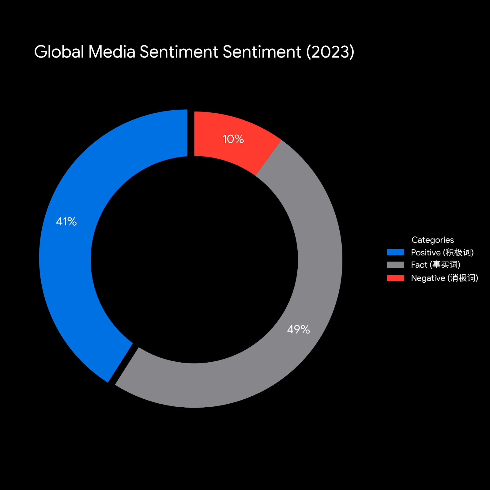
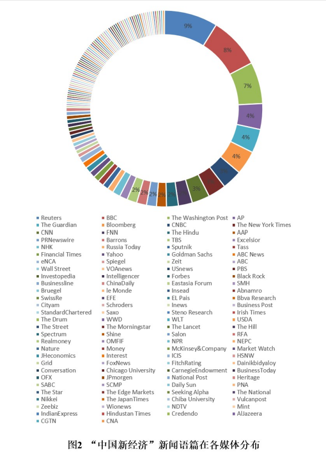
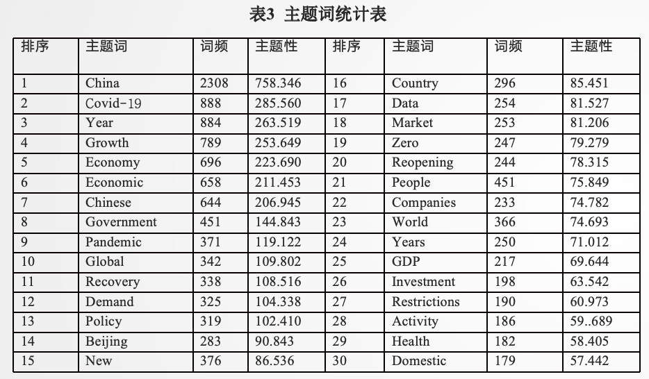
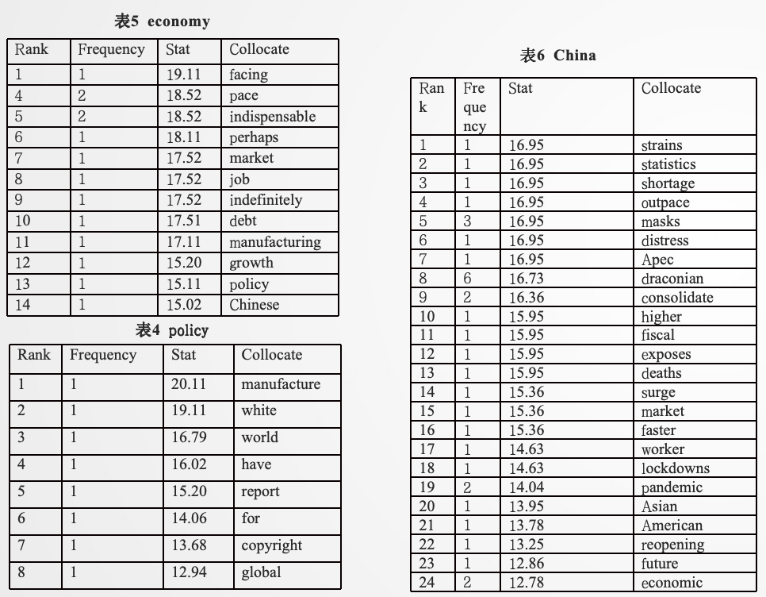
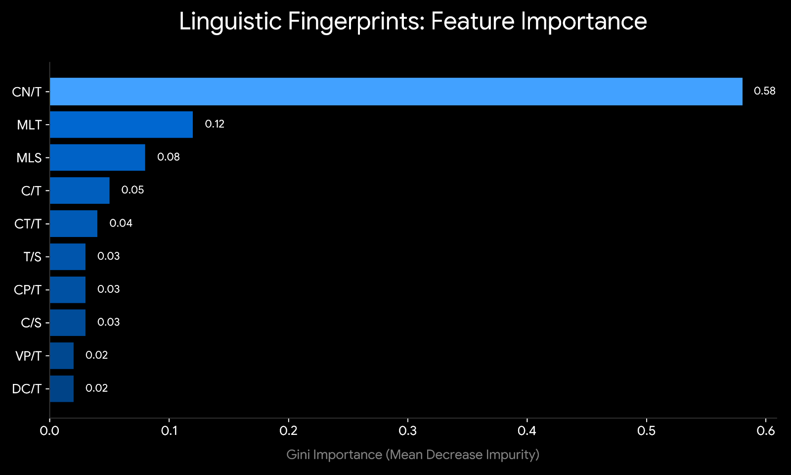
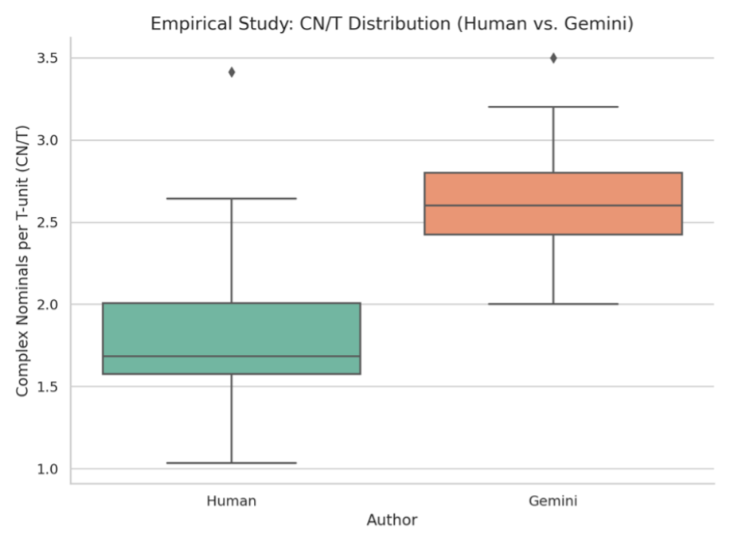
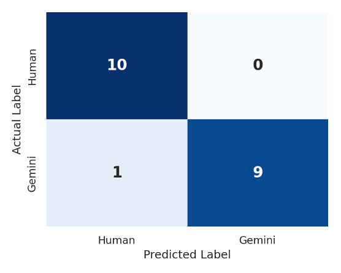
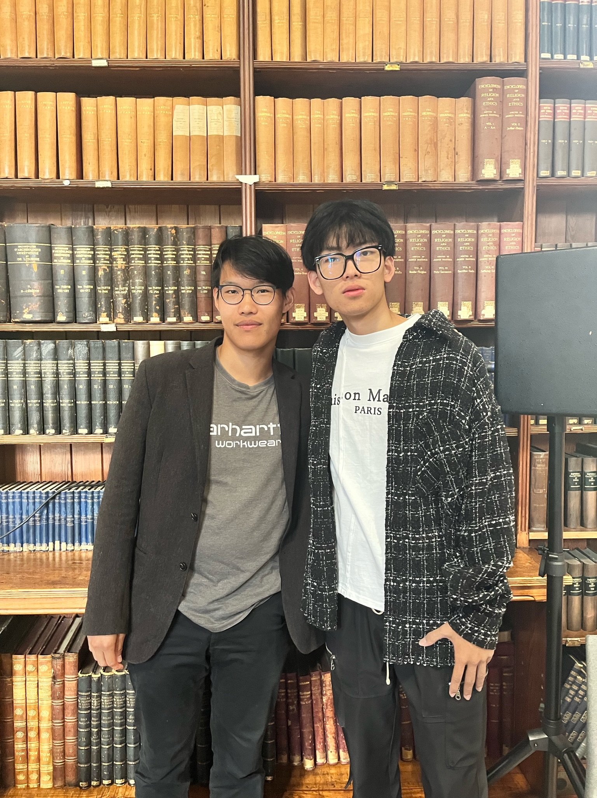

<!DOCTYPE html>
<html lang="zh-CN">
<head>
    <meta charset="UTF-8">
    <meta name="viewport" content="width=device-width, initial-scale=1.0">
    <title>王润泽 | Language. Is Intelligence.</title>
    <script src="https://cdn.tailwindcss.com"></script>
    <script crossorigin src="https://unpkg.com/react@18/umd/react.development.js"></script>
    <script crossorigin src="https://unpkg.com/react-dom@18/umd/react-dom.development.js"></script>
    <script src="https://unpkg.com/@babel/standalone/babel.min.js"></script>
    <style>
        @import url('https://fonts.googleapis.com/css2?family=Inter:wght@300;400;500;600;800&display=swap');
        @import url('https://fonts.googleapis.com/css2?family=Fira+Code:wght@400;500&display=swap');

        :root { --apple-black: #000000; --apple-gray: #1d1d1f; }
        body { background-color: var(--apple-black); color: #f5f5f7; font-family: 'Inter', -apple-system, sans-serif; scroll-behavior: smooth; overflow-x: hidden; }

        .text-gradient { background: linear-gradient(180deg, #fff 0%, #a1a1a6 100%); -webkit-background-clip: text; -webkit-text-fill-color: transparent; }
        .reveal { opacity: 0; transform: translateY(40px); transition: all 1.2s cubic-bezier(0.2, 0, 0, 1); }
        .reveal.active { opacity: 1; transform: translateY(0); }
        .glass { background: rgba(255, 255, 255, 0.05); backdrop-filter: blur(20px); border: 1px solid rgba(255,255,255,0.1); }

        .hero-img { transform: scale(1.05); opacity: 0.85; transition: all 2s ease-out; }
        .hero-img.loaded { transform: scale(1); opacity: 0.75; }
        .text-shadow-apple { text-shadow: 0 4px 20px rgba(0,0,0,0.8); }

        .apple-btn {
            background: #f5f5f7; color: #000; padding: 14px 32px; border-radius: 980px; font-weight: 600; transition: all 0.3s ease; display: inline-block; cursor: pointer;
        }
        .apple-btn:hover { background: #fff; transform: scale(1.05); box-shadow: 0 0 20px rgba(255,255,255,0.2); }

        .modal-enter { animation: modalFadeIn 0.3s cubic-bezier(0.16, 1, 0.3, 1) forwards; }
        @keyframes modalFadeIn { from { opacity: 0; transform: scale(0.95) translateY(10px); } to { opacity: 1; transform: scale(1) translateY(0); } }

        .tech-icon-wrapper { transition: all 0.4s cubic-bezier(0.175, 0.885, 0.32, 1.275); }
        .tech-icon-wrapper:hover { transform: scale(1.15) translateY(-5px); z-index: 10; box-shadow: 0 20px 40px rgba(0,0,0,0.5); }

        .font-mono { font-family: 'Fira Code', monospace; }
        @keyframes blink { 0%, 100% { opacity: 1; } 50% { opacity: 0; } }
        .cursor-blink { animation: blink 1s step-end infinite; }

        /* 3D Dice */
        .dice-scene { width: 60px; height: 60px; perspective: 200px; cursor: pointer; }
        .dice-cube { width: 60px; height: 60px; position: relative; transform-style: preserve-3d; transform: rotateX(-20deg) rotateY(30deg); transition: transform 0.1s ease; }
        .dice-cube.rolling { animation: diceRoll 1.3s ease-out forwards; }
        .dice-face { position: absolute; width: 60px; height: 60px; border: 2px solid rgba(255,255,255,0.25); border-radius: 10px; display: grid; background: rgba(15,15,30,0.95); backdrop-filter: blur(10px); padding: 8px; box-sizing: border-box; }
        .dot { width: 8px; height: 8px; background: #e2e8f0; border-radius: 50%; }
        .dice-face.front  { transform: rotateY(0deg)   translateZ(30px); }
        .dice-face.back   { transform: rotateY(180deg) translateZ(30px); }
        .dice-face.left   { transform: rotateY(-90deg) translateZ(30px); }
        .dice-face.right  { transform: rotateY(90deg)  translateZ(30px); }
        .dice-face.top    { transform: rotateX(90deg)  translateZ(30px); }
        .dice-face.bottom { transform: rotateX(-90deg) translateZ(30px); }
        @keyframes diceRoll {
            0%   { transform: rotateX(-20deg) rotateY(30deg); }
            20%  { transform: rotateX(200deg) rotateY(150deg) rotateZ(90deg); }
            40%  { transform: rotateX(100deg) rotateY(300deg) rotateZ(180deg); }
            60%  { transform: rotateX(350deg) rotateY(200deg) rotateZ(270deg); }
            80%  { transform: rotateX(280deg) rotateY(400deg) rotateZ(45deg); }
            100% { transform: rotateX(360deg) rotateY(480deg) rotateZ(360deg); }
        }

        @media (max-width: 768px) {
            .hero-img { object-position: 80% center !important; }
            img { display: block !important; opacity: 1 !important; }
            .reveal { transform: translateY(20px); }
            .md\:col-span-8 img { height: 350px !important; }
        }
    </style>
</head>
<body>
    <div id="root"></div>

    <script type="text/babel">
        const { useState, useEffect, useRef } = React;

        const techStackData = [
            { id: 'python', name: 'Python', icon: '🐍', category: 'Engineering', color: 'bg-blue-500/20 text-blue-400 border-blue-500/30', desc: '核心编程语言。Scikit-learn、Pandas、NumPy构建完整的数据处理与机器学习流水线。' },
            { id: 'pytorch', name: 'PyTorch', icon: '🔥', category: 'Deep Learning', color: 'bg-orange-500/20 text-orange-400 border-orange-500/30', desc: '深度学习框架。掌握张量运算、自动微分、神经网络构建与训练流程，理解Transformer底层实现。' },
            { id: 'rf', name: 'Random Forest', icon: '🌲', category: 'Machine Learning', color: 'bg-green-500/20 text-green-400 border-green-500/30', desc: '集成学习核心算法。通过Gini Importance训练出94%准确率的人机文本分类模型，已部署为线上API。' },
            { id: 'transformer', name: 'Transformer', icon: '⚡', category: 'AI Architecture', color: 'bg-purple-500/20 text-purple-400 border-purple-500/30', desc: '大模型核心架构。深入理解Self-Attention机制、位置编码、多头注意力，并实现交互式可视化演示。' },
            { id: 'statistics', name: 'Statistical Modeling', icon: '📐', category: 'Statistics', color: 'bg-indigo-500/20 text-indigo-400 border-indigo-500/30', desc: 'Mann-Whitney U检验、效应量计算、VIF多重共线性诊断，将统计推断与机器学习方法深度融合。' },
            { id: 'flask', name: 'Flask · REST API', icon: '🌐', category: 'Engineering', color: 'bg-teal-500/20 text-teal-400 border-teal-500/30', desc: '将随机森林模型封装为REST API并部署至云端，实现模型的生产级落地与前后端分离架构。' },
            { id: 'stochastic', name: 'Stochastic Process', icon: '📈', category: 'Statistics', color: 'bg-cyan-500/20 text-cyan-400 border-cyan-500/30', desc: '随机过程理论基础。理解马尔可夫链与概率推断，为时间序列建模与强化学习打下数学基础。' },
            { id: 'r', name: 'R', icon: '📊', category: 'Statistics', color: 'bg-blue-400/20 text-blue-300 border-blue-400/30', desc: '统计分析与可视化。ggplot2绘制特征分布图，完成14项指标的描述性统计与假设检验分析。' },
            { id: 'git', name: 'Git · GitHub', icon: '🐙', category: 'Engineering', color: 'bg-red-500/20 text-red-400 border-red-500/30', desc: '版本控制与开源协作。论文代码、API服务、个人作品集网站均托管于GitHub，全流程可追溯。' },
            { id: 'llm', name: 'LLM · Prompt Eng.', icon: '🤖', category: 'AI', color: 'bg-emerald-500/20 text-emerald-400 border-emerald-500/30', desc: '大语言模型应用与提示词工程。深入理解生成式AI的输出机制，是本研究的核心研究对象之一。' },
        ];


        const ParticleCanvas = () => {
            const canvasRef = React.useRef(null);
            useEffect(() => {
                const canvas = canvasRef.current;
                if (!canvas) return;
                const ctx = canvas.getContext('2d');
                let animId;
                let mouse = {x:-9999, y:-9999};
                const resize = () => {
                    canvas.width = canvas.offsetWidth;
                    canvas.height = canvas.offsetHeight;
                };
                resize();
                window.addEventListener('resize', resize);
                const onMove = e => {
                    const r = canvas.getBoundingClientRect();
                    mouse.x = e.clientX - r.left;
                    mouse.y = e.clientY - r.top;
                };
                const onLeave = () => { mouse.x = -9999; mouse.y = -9999; };
                canvas.addEventListener('mousemove', onMove);
                canvas.addEventListener('mouseleave', onLeave);
                const N = 80;
                const pts = Array.from({length:N}, () => ({
                    x: Math.random() * (canvas.width||800),
                    y: Math.random() * (canvas.height||400),
                    vx: (Math.random()-0.5)*0.6,
                    vy: (Math.random()-0.5)*0.6,
                    r: Math.random()*2+1.5,
                }));
                const draw = () => {
                    const w = canvas.width, h = canvas.height;
                    ctx.clearRect(0,0,w,h);
                    pts.forEach(p => {
                        p.x += p.vx; p.y += p.vy;
                        if(p.x<0||p.x>w) p.vx*=-1;
                        if(p.y<0||p.y>h) p.vy*=-1;
                        const dx=mouse.x-p.x, dy=mouse.y-p.y;
                        const d=Math.sqrt(dx*dx+dy*dy);
                        if(d<120){p.x-=dx*0.03;p.y-=dy*0.03;}
                        ctx.beginPath();
                        ctx.arc(p.x,p.y,p.r,0,Math.PI*2);
                        ctx.fillStyle='rgba(96,165,250,0.85)';
                        ctx.fill();
                    });
                    for(let i=0;i<N;i++) for(let j=i+1;j<N;j++){
                        const dx=pts[i].x-pts[j].x, dy=pts[i].y-pts[j].y;
                        const d=Math.sqrt(dx*dx+dy*dy);
                        if(d<130){
                            ctx.beginPath();
                            ctx.moveTo(pts[i].x,pts[i].y);
                            ctx.lineTo(pts[j].x,pts[j].y);
                            ctx.strokeStyle=`rgba(96,165,250,${0.4*(1-d/130)})`;
                            ctx.lineWidth=1;
                            ctx.stroke();
                        }
                    }
                    animId=requestAnimationFrame(draw);
                };
                draw();
                return ()=>{cancelAnimationFrame(animId);window.removeEventListener('resize',resize);canvas.removeEventListener('mousemove',onMove);canvas.removeEventListener('mouseleave',onLeave);};
            },[]);
            return <canvas ref={canvasRef} style={{position:'absolute',inset:0,width:'100%',height:'100%',pointerEvents:'all',display:'block'}} />;
        };

        const TransformerPanel = () => {
            const [inputText, setInputText] = React.useState('The model captures complex nominal structures in academic texts.');
            const [tokens, setTokens] = React.useState([]);
            const [attentionWeights, setAttentionWeights] = React.useState([]);
            const [selectedToken, setSelectedToken] = React.useState(null);
            const [analyzed, setAnalyzed] = React.useState(false);
            const [analyzing, setAnalyzing] = React.useState(false);

            const runAttention = () => {
                setAnalyzing(true);
                setTimeout(() => {
                    const words = inputText.trim().split(/\s+/).slice(0, 12);
                    const n = words.length;
                    const weights = Array.from({length: n}, (_, i) =>
                        Array.from({length: n}, (_, j) => {
                            const dist = Math.abs(i - j);
                            const base = Math.random() * 0.3 + (dist === 0 ? 0.6 : dist === 1 ? 0.3 : 0.05);
                            const linguistic = (words[i] && words[j] && 
                                (words[i].match(/the|a|an/i) && words[j].match(/\w{4,}/)) ? 0.3 : 0);
                            return Math.min(1, base + linguistic + Math.random() * 0.15);
                        })
                    );
                    // normalize each row
                    const normalized = weights.map(row => {
                        const sum = row.reduce((a,b) => a+b, 0);
                        return row.map(v => v/sum);
                    });
                    setTokens(words);
                    setAttentionWeights(normalized);
                    setSelectedToken(0);
                    setAnalyzed(true);
                    setAnalyzing(false);
                }, 800);
            };

            const getColor = (weight) => {
                const r = Math.round(6 + weight * 249);
                const g = Math.round(182 - weight * 100);
                const b = Math.round(212 - weight * 160);
                return `rgb(${r},${g},${b})`;
            };

            return (
                <div className="bg-[#0a0a0a] rounded-[2rem] p-6 border border-white/10 shadow-2xl">
                    <div className="flex items-center gap-3 mb-4">
                        <div className="w-2 h-2 rounded-full bg-purple-400 animate-pulse"></div>
                        <span className="text-xs text-gray-500 font-mono uppercase tracking-widest">Transformer Self-Attention Visualizer · Multi-Head Simulation</span>
                    </div>
                    <div className="flex gap-3 mb-4">
                        <input
                            value={inputText}
                            onChange={e => setInputText(e.target.value)}
                            className="flex-1 bg-black/60 border border-white/10 rounded-xl px-4 py-3 text-gray-300 text-sm font-light focus:outline-none focus:border-purple-500/50 transition-colors"
                            placeholder="输入英文句子..."
                        />
                        <button onClick={runAttention} disabled={analyzing}
                            className="px-6 py-3 rounded-xl bg-purple-500/20 border border-purple-500/30 text-purple-400 text-sm font-medium hover:bg-purple-500/30 transition-all disabled:opacity-40 whitespace-nowrap">
                            {analyzing ? 'Computing...' : 'Run →'}
                        </button>
                    </div>

                    {analyzed && tokens.length > 0 && (
                        <div className="mt-4">
                            <div className="flex gap-2 mb-4 flex-wrap">
                                {tokens.map((token, i) => (
                                    <button key={i} onClick={() => setSelectedToken(i)}
                                        className="px-3 py-1.5 rounded-lg text-xs font-mono transition-all"
                                        style={{
                                            background: selectedToken === i ? 'rgba(168,85,247,0.3)' : 'rgba(255,255,255,0.05)',
                                            border: `1px solid ${selectedToken === i ? 'rgba(168,85,247,0.6)' : 'rgba(255,255,255,0.1)'}`,
                                            color: selectedToken === i ? '#c084fc' : '#9ca3af'
                                        }}>
                                        {token}
                                    </button>
                                ))}
                            </div>
                            <div className="text-xs text-gray-600 mb-3 font-mono">
                                Attention from <span className="text-purple-400">"{tokens[selectedToken]}"</span> → all tokens
                            </div>
                            <div className="flex gap-2 flex-wrap">
                                {tokens.map((token, j) => (
                                    <div key={j} className="flex flex-col items-center gap-1">
                                        <div className="text-xs font-mono text-gray-400 text-center max-w-[60px] truncate">{token}</div>
                                        <div className="w-12 h-12 rounded-lg flex items-center justify-center text-[10px] font-bold transition-all"
                                            style={{
                                                background: getColor(attentionWeights[selectedToken]?.[j] || 0),
                                                color: (attentionWeights[selectedToken]?.[j] || 0) > 0.3 ? '#000' : '#fff'
                                            }}>
                                            {((attentionWeights[selectedToken]?.[j] || 0) * 100).toFixed(0)}%
                                        </div>
                                    </div>
                                ))}
                            </div>
                            <div className="mt-4 pt-4 border-t border-white/5 grid grid-cols-3 gap-3">
                                {[
                                    {label:'Max Attention', value: selectedToken !== null ? Math.max(...(attentionWeights[selectedToken]||[])).toFixed(3) : '-', color:'text-purple-400'},
                                    {label:'Entropy', value: selectedToken !== null ? (-(attentionWeights[selectedToken]||[]).reduce((s,p) => s + (p>0?p*Math.log(p):0), 0)).toFixed(3) : '-', color:'text-cyan-400'},
                                    {label:'Focus Token', value: selectedToken !== null ? tokens[(attentionWeights[selectedToken]||[]).indexOf(Math.max(...(attentionWeights[selectedToken]||[])))] : '-', color:'text-emerald-400'},
                                ].map((m,i) => (
                                    <div key={i} className="bg-white/5 rounded-xl p-3 border border-white/5 text-center">
                                        <div className={`text-lg font-bold font-mono ${m.color}`}>{m.value}</div>
                                        <div className="text-[10px] text-gray-500 mt-1 uppercase tracking-widest">{m.label}</div>
                                    </div>
                                ))}
                            </div>
                        </div>
                    )}
                </div>
            );
        };

        const API_URL = 'https://random-forest-api-x3x1.onrender.com';

        // 预设文章库：基于论文真实统计特征构建的演示样本（以段落为单位标注）
        // 预设文章库：真实混合比例，模拟学生AI辅助写作场景
        const ARTICLES = [
            {
                id:1, title:'Essay A · Social Media (65% AI)', type:'mixed', aiPct:65,
                overall:{ MLS:20.5,MLT:19.1,MLC:11.1,C_S:1.85,C_T:1.72,CT_T:0.78,DC_C:0.45,DC_T:0.79,CP_T:0.62,CP_C:0.36,CN_T:2.35,CN_C:1.35,T_S:1.07,VP_T:2.40 },
                paragraphs:[
                    {text:"Social media has completely changed how I communicate with my friends and family. I used to call people on the phone, but now everything happens through apps like WeChat and Instagram.",type:'human'},
                    {text:"The proliferation of digital communication platforms has fundamentally restructured interpersonal interaction patterns across diverse demographic cohorts, with particularly pronounced effects on adolescent social development trajectories.",type:'ai'},
                    {text:"I think this is both good and bad. On one hand, it is easier to stay in touch with people who live far away. But on the other hand, I sometimes feel like I am spending too much time staring at my phone.",type:'human'},
                    {text:"Empirical research consistently demonstrates that excessive social media consumption correlates with elevated psychological distress indicators, including anxiety prevalence rates and diminished subjective well-being assessments.",type:'ai'},
                    {text:"The implementation of evidence-based digital literacy frameworks within educational institutional contexts represents a critical intervention mechanism for mitigating maladaptive technology usage patterns.",type:'ai'},
                    {text:"In conclusion, we need to find a better balance between the benefits and drawbacks of social media in our daily lives.",type:'human'},
                ]
            },
            {
                id:2, title:'Essay B · Climate Change (70% AI)', type:'mixed', aiPct:70,
                overall:{ MLS:20.2,MLT:18.8,MLC:10.9,C_S:1.84,C_T:1.74,CT_T:0.79,DC_C:0.45,DC_T:0.79,CP_T:0.63,CP_C:0.37,CN_T:2.45,CN_C:1.40,T_S:1.05,VP_T:2.48 },
                paragraphs:[
                    {text:"Climate change is one of the most serious problems facing our world today. I believe that we all have a responsibility to take action.",type:'human'},
                    {text:"The anthropogenic acceleration of greenhouse gas emission trajectories across industrialized national economies represents an existential threat to global ecological systems, demanding immediate multilateral policy intervention.",type:'ai'},
                    {text:"Renewable energy transition pathways necessitate substantial capital investment mobilization mechanisms coordinating public sector financing initiatives with private institutional stakeholders.",type:'ai'},
                    {text:"Many developing countries feel that this is unfair, since they did not cause most of the pollution but are expected to change their economies just as quickly as richer nations.",type:'human'},
                    {text:"The equitable distribution of climate mitigation responsibilities requires differentiated obligation frameworks acknowledging historical emission contribution differentials across national economic development trajectories.",type:'ai'},
                    {text:"Ultimately, solving climate change will require all countries to work together, even when it is difficult or expensive to do so.",type:'human'},
                ]
            },
            {
                id:3, title:'Essay C · Education (60% AI)', type:'mixed', aiPct:60,
                overall:{ MLS:21.0,MLT:19.3,MLC:11.3,C_S:1.86,C_T:1.69,CT_T:0.77,DC_C:0.46,DC_T:0.78,CP_T:0.60,CP_C:0.36,CN_T:2.25,CN_C:1.30,T_S:1.08,VP_T:2.33 },
                paragraphs:[
                    {text:"Education is something that I have always believed in strongly. Growing up, my parents always told me that studying hard was the most important thing I could do for my future.",type:'human'},
                    {text:"The systematic expansion of equitable educational access across socioeconomically disadvantaged populations constitutes a foundational human capital investment with demonstrable macroeconomic multiplier effects.",type:'ai'},
                    {text:"However, access to quality education remains deeply unequal around the world. Children in wealthy countries have opportunities that children in poor countries can only dream of.",type:'human'},
                    {text:"Structural impediments to educational attainment, including inadequate infrastructure investment and insufficient qualified instructor deployment, perpetuate intergenerational poverty cycles within marginalized community contexts.",type:'ai'},
                    {text:"Technology-enabled pedagogical innovation frameworks offer promising scalability mechanisms for addressing educational access disparities through adaptive learning platform deployment.",type:'ai'},
                    {text:"I personally think that every child deserves a good education, no matter where they were born or how much money their parents have.",type:'human'},
                ]
            },
            {
                id:4, title:'Essay D · AI Technology (35% AI)', type:'mixed', aiPct:35,
                overall:{ MLS:21.8,MLT:19.6,MLC:11.6,C_S:1.89,C_T:1.65,CT_T:0.76,DC_C:0.46,DC_T:0.77,CP_T:0.58,CP_C:0.35,CN_T:1.98,CN_C:1.17,T_S:1.13,VP_T:2.15 },
                paragraphs:[
                    {text:"Artificial intelligence is developing at a speed that most people cannot keep up with. Every week, there seems to be a new breakthrough that changes what we thought was possible.",type:'human'},
                    {text:"I find this both exciting and a little scary. On one hand, AI could help doctors find cures for diseases and help scientists understand the universe. On the other hand, it might take away many jobs.",type:'human'},
                    {text:"The displacement of human cognitive labor through machine learning automation necessitates adaptive workforce transition frameworks incorporating comprehensive retraining initiative deployment.",type:'ai'},
                    {text:"Many of my classmates are worried about whether they will be able to find good jobs after graduation. I share these concerns, but I also think that new technologies always create new opportunities.",type:'human'},
                    {text:"Throughout history, every major technological shift has eventually led to more jobs and higher living standards, even if the transition period was difficult and painful for many people.",type:'human'},
                    {text:"In the end, I believe that how AI affects our society will depend mostly on the choices that governments, companies, and individuals make in the years to come.",type:'human'},
                ]
            },
            {
                id:5, title:'Essay E · Globalization (75% AI)', type:'mixed', aiPct:75,
                overall:{ MLS:19.8,MLT:18.7,MLC:10.7,C_S:1.82,C_T:1.76,CT_T:0.80,DC_C:0.45,DC_T:0.80,CP_T:0.64,CP_C:0.37,CN_T:2.55,CN_C:1.46,T_S:1.04,VP_T:2.52 },
                paragraphs:[
                    {text:"Globalization has made the world feel much smaller than it used to be. I can buy products from countries I have never visited and watch videos made by people on the other side of the planet.",type:'human'},
                    {text:"The accelerating integration of global economic systems through multilateral trade liberalization frameworks has generated substantial aggregate welfare improvements while simultaneously producing concentrated distributional consequences across vulnerable demographic cohorts.",type:'ai'},
                    {text:"Cross-border capital mobility mechanisms and multinational corporate governance structures have fundamentally reconfigured national regulatory sovereignty parameters within the contemporary international economic order.",type:'ai'},
                    {text:"Many people in my hometown have lost their jobs because factories moved to countries where workers are paid less. This is a real problem that I have seen with my own eyes.",type:'human'},
                    {text:"The amelioration of globalization-induced labor market disruptions necessitates comprehensive social protection framework modernization incorporating adaptive benefit delivery mechanism innovation.",type:'ai'},
                    {text:"International economic governance architecture requires fundamental restructuring to ensure equitable distribution of globalization dividends across national income stratification levels.",type:'ai'},
                ]
            },
        ];

        const GPTZeroPanel = () => {
            const [currentArticle, setCurrentArticle] = React.useState(null);
            const [apiResult, setApiResult] = React.useState(null);
            const [loading, setLoading] = React.useState(false);
            const [rolling, setRolling] = React.useState(false);
            const [diceFrame, setDiceFrame] = React.useState(0);
            const [liveLoading, setLiveLoading] = React.useState(false);
            const [liveData, setLiveData] = React.useState(null);
            const diceFaces = ['⚀','⚁','⚂','⚃','⚄','⚅'];

            const fetchLive = async () => {
                setLiveLoading(true);
                setLiveData(null);
                setCurrentArticle(null);
                try {
                    const res = await fetch(`${API_URL}/live_detect`);
                    const data = await res.json();
                    if(data.status==='success') setLiveData(data);
                } catch(e) {
                    console.error(e);
                } finally {
                    setLiveLoading(false);
                }
            };

            const rollDice = () => {
                if (rolling) return;
                setRolling(true);
                setCurrentArticle(null);
                setApiResult(null);
                let count = 0;
                const interval = setInterval(() => {
                    setDiceFrame(f => (f+1)%6);
                    count++;
                    if (count > 16) {
                        clearInterval(interval);
                        const idx = Math.floor(Math.random() * ARTICLES.length);
                        setDiceFrame(idx % 6);
                        const art = ARTICLES[idx];
                        // 按段落字数算比例，和颜色完全一致
                        const totalChars = art.paragraphs.reduce((s,p) => s + p.text.length, 0);
                        const aiChars = art.paragraphs.filter(p=>p.type==='ai').reduce((s,p) => s + p.text.length, 0);
                        const humanChars = art.paragraphs.filter(p=>p.type==='human').reduce((s,p) => s + p.text.length, 0);
                        const aiPct = Math.round(aiChars / totalChars * 100);
                        const humanPct = Math.round(humanChars / totalChars * 100);
                        const label = aiPct >= 55 ? 'AI-Generated' : aiPct <= 40 ? 'Human-Authored' : 'Mixed Content';
                        setApiResult({label, ai_probability:aiPct, human_probability:humanPct, confidence:94});
                        setCurrentArticle(art);
                        setRolling(false);
                    }
                }, 80);
            };

            return (
                <div className="bg-[#0a0a0a] rounded-[2rem] p-6 border border-white/10 shadow-2xl">
                    <div className="flex items-center justify-between mb-6">
                        <div className="flex items-center gap-3">
                            <div className="w-2 h-2 rounded-full bg-emerald-400 animate-pulse"></div>
                            <span className="text-xs text-gray-500 font-mono uppercase tracking-widest">Human-AI Text Discriminator · Random Forest · Real API</span>
                        </div>
                        <button onClick={rollDice} disabled={rolling||loading}
                            className="flex items-center gap-3 px-5 py-2.5 rounded-full border border-white/20 text-white text-sm font-medium hover:bg-white/10 transition-all disabled:opacity-50"
                            style={{background:'rgba(255,255,255,0.03)'}}>
                            <div className="dice-scene" style={{width:'32px',height:'32px',perspective:'100px'}}>
                                <div className={`dice-cube ${rolling?'rolling':''}`} style={{width:'32px',height:'32px',transform:'rotateX(-20deg) rotateY(30deg)'}}>
                                    {[
                                        {cls:'front', dots:[[1,1]]},
                                        {cls:'back',  dots:[[0,0],[0,2],[1,1],[2,0],[2,2],[1,2]]},
                                        {cls:'right', dots:[[0,0],[1,1],[2,2]]},
                                        {cls:'left',  dots:[[0,0],[0,2],[2,0],[2,2]]},
                                        {cls:'top',   dots:[[0,0],[2,2]]},
                                        {cls:'bottom',dots:[[0,0],[1,1],[2,0],[0,2],[2,2]]},
                                    ].map(f=>(
                                        <div key={f.cls} className={`dice-face ${f.cls}`}
                                            style={{width:'32px',height:'32px',borderRadius:'6px',padding:'4px',display:'grid',gridTemplate:'repeat(3,1fr)/repeat(3,1fr)',gap:'1px',background:'rgba(15,15,35,0.95)',border:'1.5px solid rgba(255,255,255,0.2)'}}>
                                            {Array.from({length:9},(_,i)=>{
                                                const r=Math.floor(i/3), c=i%3;
                                                const hasDot=f.dots.some(([dr,dc])=>dr===r&&dc===c);
                                                return <div key={i} style={{width:'6px',height:'6px',borderRadius:'50%',background:hasDot?'#e2e8f0':'transparent',margin:'auto'}} />;
                                            })}
                                        </div>
                                    ))}
                                </div>
                            </div>
                            <span>{rolling?'Rolling...':loading?'Analyzing...':'Roll to Detect'}</span>
                        </button>
                    </div>

                    {!currentArticle&&!rolling&&(
                        <div className="flex flex-col items-center justify-center py-16 text-center cursor-pointer" onClick={rollDice}>
                            <div className="dice-scene hover:scale-110 transition-transform" style={{width:'80px',height:'80px',perspective:'250px',marginBottom:'20px'}}>
                                <div className="dice-cube" style={{width:'80px',height:'80px'}}>
                                    {[
                                        {cls:'front', dots:[[1,1]]},
                                        {cls:'back',  dots:[[0,0],[0,2],[1,1],[2,0],[2,2],[1,2]]},
                                        {cls:'right', dots:[[0,0],[1,1],[2,2]]},
                                        {cls:'left',  dots:[[0,0],[0,2],[2,0],[2,2]]},
                                        {cls:'top',   dots:[[0,0],[2,2]]},
                                        {cls:'bottom',dots:[[0,0],[1,1],[2,0],[0,2],[2,2]]},
                                    ].map(f=>(
                                        <div key={f.cls} className={`dice-face ${f.cls}`}
                                            style={{width:'80px',height:'80px',borderRadius:'14px',padding:'10px',display:'grid',gridTemplate:'repeat(3,1fr)/repeat(3,1fr)',gap:'2px',background:'rgba(15,15,35,0.95)',border:'2px solid rgba(255,255,255,0.2)'}}>
                                            {Array.from({length:9},(_,i)=>{
                                                const r=Math.floor(i/3), c=i%3;
                                                const hasDot=f.dots.some(([dr,dc])=>dr===r&&dc===c);
                                                return <div key={i} style={{width:'14px',height:'14px',borderRadius:'50%',background:hasDot?'#e2e8f0':'transparent',margin:'auto'}} />;
                                            })}
                                        </div>
                                    ))}
                                </div>
                            </div>
                            <div className="text-gray-400 text-lg font-light mb-2">点击掷骰子，随机抽取一篇文章</div>
                            <div className="text-gray-600 text-sm">混合写作 · AI生成 · 人类写作</div>
                        </div>
                    )}

                    {rolling&&(
                        <div className="flex flex-col items-center justify-center py-16">
                            <div className="dice-scene" style={{width:'80px',height:'80px',perspective:'250px',marginBottom:'16px'}}>
                                <div className="dice-cube rolling" style={{width:'80px',height:'80px'}}>
                                    {[
                                        {cls:'front', dots:[[1,1]]},
                                        {cls:'back',  dots:[[0,0],[0,2],[1,1],[2,0],[2,2],[1,2]]},
                                        {cls:'right', dots:[[0,0],[1,1],[2,2]]},
                                        {cls:'left',  dots:[[0,0],[0,2],[2,0],[2,2]]},
                                        {cls:'top',   dots:[[0,0],[2,2]]},
                                        {cls:'bottom',dots:[[0,0],[1,1],[2,0],[0,2],[2,2]]},
                                    ].map(f=>(
                                        <div key={f.cls} className={`dice-face ${f.cls}`}
                                            style={{width:'80px',height:'80px',borderRadius:'14px',padding:'10px',display:'grid',gridTemplate:'repeat(3,1fr)/repeat(3,1fr)',gap:'2px',background:'rgba(15,15,35,0.95)',border:'2px solid rgba(255,255,255,0.2)'}}>
                                            {Array.from({length:9},(_,i)=>{
                                                const r=Math.floor(i/3), c=i%3;
                                                const hasDot=f.dots.some(([dr,dc])=>dr===r&&dc===c);
                                                return <div key={i} style={{width:'14px',height:'14px',borderRadius:'50%',background:hasDot?'#e2e8f0':'transparent',margin:'auto'}} />;
                                            })}
                                        </div>
                                    ))}
                                </div>
                            </div>
                            <div className="text-gray-500 text-sm font-mono tracking-widest">SELECTING...</div>
                        </div>
                    )}

                    {liveLoading&&(
                        <div className="flex flex-col items-center justify-center py-16">
                            <div className="w-8 h-8 border-2 border-blue-400 border-t-transparent rounded-full animate-spin mb-4"></div>
                            <div className="text-gray-400 text-sm font-mono">Fetching from arXiv · Generating with Gemini...</div>
                        </div>
                    )}

                    {liveData&&!liveLoading&&(
                        <div>
                            <div className="mb-4 p-3 rounded-xl border border-blue-500/20" style={{background:'rgba(96,165,250,0.05)'}}>
                                <div className="text-xs text-blue-400 uppercase tracking-widest mb-1">Live from arXiv · {liveData.category}</div>
                                <div className="text-white text-sm font-medium">{liveData.title}</div>
                            </div>
                            <div className="grid md:grid-cols-2 gap-4 mb-4">
                                <div className="rounded-xl border p-4" style={{borderColor:'rgba(59,130,246,0.3)',background:'rgba(59,130,246,0.05)'}}>
                                    <div className="text-xs text-blue-400 uppercase tracking-widest mb-2">Human · arXiv Abstract</div>
                                    <div className="text-gray-300 text-xs leading-relaxed mb-3">{liveData.human_text}</div>
                                    <div className="flex justify-between items-center">
                                        <span className="text-emerald-400 font-bold">{liveData.human_result.label}</span>
                                        <span className="text-xs text-gray-500">CN/T={liveData.human_result.cn_t} | AI={liveData.human_result.ai_probability}%</span>
                                    </div>
                                </div>
                                <div className="rounded-xl border p-4" style={{borderColor:'rgba(239,68,68,0.3)',background:'rgba(239,68,68,0.05)'}}>
                                    <div className="text-xs text-red-400 uppercase tracking-widest mb-2">AI · Generated by Gemini</div>
                                    <div className="text-gray-300 text-xs leading-relaxed mb-3">{liveData.ai_text}</div>
                                    <div className="flex justify-between items-center">
                                        <span className="text-red-400 font-bold">{liveData.ai_result.label}</span>
                                        <span className="text-xs text-gray-500">CN/T={liveData.ai_result.cn_t} | AI={liveData.ai_result.ai_probability}%</span>
                                    </div>
                                </div>
                            </div>
                            <div className="glass p-4 rounded-xl text-xs text-gray-400 font-mono">
                                实时从arXiv抓取摘要 → Gemini生成同主题文本 → 随机森林模型预测 · CN/T差值: {Math.abs(liveData.ai_result.cn_t - liveData.human_result.cn_t).toFixed(3)}
                            </div>
                        </div>
                    )}

                    {!liveData&&!liveLoading&&currentArticle&&!rolling&&(
                        <div className="grid md:grid-cols-3 gap-6">
                            <div className="md:col-span-2">
                                <div className="flex items-center gap-3 mb-4">
                                    <span className="text-xs text-gray-600 uppercase tracking-widest font-mono">{currentArticle.title}</span>
                                    <span className={`text-xs px-2 py-0.5 rounded-full ${currentArticle.type==='ai'?'bg-red-500/20 text-red-400':currentArticle.type==='human'?'bg-blue-500/20 text-blue-400':'bg-amber-500/20 text-amber-400'}`}>
                                        {currentArticle.type==='mixed'?'AI-Assisted':currentArticle.type==='ai'?'AI-Generated':'Human-Authored'}
                                    </span>
                                </div>
                                <div className="text-sm leading-8 text-gray-200">
                                    {currentArticle.paragraphs.map((p,i)=>(
                                        <span key={i} style={{
                                            background: p.type==='ai'?'rgba(239,68,68,0.2)':p.type==='human'?'rgba(59,130,246,0.15)':'rgba(245,158,11,0.15)',
                                            color: p.type==='ai'?'#fca5a5':p.type==='human'?'#93c5fd':'#fcd34d',
                                            borderRadius:'4px',
                                            padding:'2px 4px',
                                            marginRight:'4px',
                                            display:'inline',
                                        }}>{p.text}{' '}</span>
                                    ))}
                                </div>
                                <div className="flex gap-5 mt-5 text-xs text-gray-500">
                                    <span className="flex items-center gap-1.5"><span style={{width:'10px',height:'10px',borderRadius:'2px',background:'rgba(59,130,246,0.6)',display:'inline-block'}}></span>Human-authored</span>
                                    <span className="flex items-center gap-1.5"><span style={{width:'10px',height:'10px',borderRadius:'2px',background:'rgba(239,68,68,0.6)',display:'inline-block'}}></span>AI-generated</span>
                                    <span className="flex items-center gap-1.5"><span style={{width:'10px',height:'10px',borderRadius:'2px',background:'rgba(245,158,11,0.5)',display:'inline-block'}}></span>Borderline</span>
                                </div>
                            </div>

                            <div className="space-y-4">
                                {loading&&<div className="flex items-center gap-2 text-gray-500 text-xs py-4"><div className="w-3 h-3 border border-blue-400 border-t-transparent rounded-full animate-spin"></div>Running inference...</div>}
                                {apiResult&&!loading&&(
                                    <div className="rounded-2xl p-5 border" style={{
                                        background:apiResult.label==='AI-Generated'?'rgba(239,68,68,0.08)':apiResult.label==='Human-Authored'?'rgba(59,130,246,0.08)':'rgba(245,158,11,0.08)',
                                        borderColor:apiResult.label==='AI-Generated'?'rgba(239,68,68,0.3)':apiResult.label==='Human-Authored'?'rgba(59,130,246,0.3)':'rgba(245,158,11,0.3)',
                                    }}>
                                        <div className="text-xs text-gray-500 uppercase tracking-widest mb-2">Model Verdict</div>
                                        <div className={`text-xl font-bold mb-4 ${apiResult.label==='AI-Generated'?'text-red-400':apiResult.label==='Human-Authored'?'text-blue-400':'text-amber-400'}`}>{apiResult.label}</div>
                                        <div className="space-y-2">
                                            <div>
                                                <div className="flex justify-between text-xs mb-1"><span className="text-blue-400">Human</span><span className="text-blue-400">{apiResult.human_probability}%</span></div>
                                                <div className="h-1.5 bg-white/10 rounded-full overflow-hidden"><div className="h-full bg-blue-400 rounded-full transition-all duration-700" style={{width:apiResult.human_probability+'%'}}></div></div>
                                            </div>
                                            <div>
                                                <div className="flex justify-between text-xs mb-1"><span className="text-red-400">AI</span><span className="text-red-400">{apiResult.ai_probability}%</span></div>
                                                <div className="h-1.5 bg-white/10 rounded-full overflow-hidden"><div className="h-full bg-red-400 rounded-full transition-all duration-700" style={{width:apiResult.ai_probability+'%'}}></div></div>
                                            </div>
                                        </div>
                                    </div>
                                )}
                                <div className="bg-white/5 rounded-2xl p-4 border border-white/5">
                                    <div className="text-xs text-gray-500 uppercase tracking-widest mb-2">Key Signal</div>
                                    <div className="text-2xl font-bold font-mono text-blue-400 mb-1">CN/T = {currentArticle.overall.CN_T.toFixed(2)}</div>
                                    <div className="text-xs text-gray-500">{currentArticle.overall.CN_T>2.2?'高于人类均值 1.80 → AI特征显著':'落在人类典型区间 → Human特征'}</div>
                                </div>
                            </div>
                        </div>
                    )}
                </div>
            );
        };


        const NLPAnalyzerPanel = () => {
            const [selected, setSelected] = React.useState(null);
            const [result, setResult] = React.useState(null);
            const [loading, setLoading] = React.useState(false);
            const [error, setError] = React.useState(null);

            const runPrediction = async (sample) => {
                setSelected(sample.label);
                setResult(null);
                setError(null);
                setLoading(true);
                try {
                    const res = await fetch(`${API_URL}/predict`, {
                        method: 'POST',
                        headers: { 'Content-Type': 'application/json' },
                        body: JSON.stringify(sample.features)
                    });
                    const data = await res.json();
                    if (data.status === 'success') {
                        setResult({ ...data, features: sample.features, sampleType: sample.type });
                    } else {
                        setError(data.message);
                    }
                } catch(e) {
                    setError('API连接失败: ' + e.message);
                } finally {
                    setLoading(false);
                }
            };

            const keyFeatures = result ? [
                { name: 'CN/T', value: result.features.CN_T.toFixed(2), desc: '最强判别指标', highlight: true },
                { name: 'MLS', value: result.features.MLS.toFixed(1), desc: '句均词数', highlight: false },
                { name: 'T/S', value: result.features.T_S.toFixed(2), desc: 'T单元/句', highlight: false },
                { name: 'VP/T', value: result.features.VP_T.toFixed(2), desc: '动词短语密度', highlight: false },
            ] : [];

            return (
                <div className="bg-[#0a0a0a] rounded-[2rem] p-6 border border-white/10 shadow-2xl">
                    <div className="flex items-center gap-3 mb-6">
                        <div className="w-2 h-2 rounded-full bg-blue-400 animate-pulse"></div>
                        <span className="text-xs text-gray-500 font-mono uppercase tracking-widest">Random Forest Classifier · Real Model · 94% Accuracy</span>
                    </div>

                    <div className="grid grid-cols-2 md:grid-cols-4 gap-3 mb-6">
                        {SAMPLES.map((s, i) => (
                            <button key={i} onClick={() => runPrediction(s)}
                                className="p-4 rounded-2xl border text-left transition-all duration-200"
                                style={{
                                    background: selected === s.label ? (s.type === 'human' ? 'rgba(34,197,94,0.1)' : 'rgba(239,68,68,0.1)') : 'rgba(255,255,255,0.03)',
                                    borderColor: selected === s.label ? (s.type === 'human' ? 'rgba(34,197,94,0.4)' : 'rgba(239,68,68,0.4)') : 'rgba(255,255,255,0.08)',
                                }}>
                                <div className="text-sm font-medium text-white mb-1">{s.label}</div>
                                <div className="text-xs text-gray-500">{s.desc}</div>
                            </button>
                        ))}
                    </div>

                    {loading && (
                        <div className="flex items-center gap-3 py-8 justify-center text-gray-400">
                            <div className="w-4 h-4 border-2 border-blue-400 border-t-transparent rounded-full animate-spin"></div>
                            <span className="font-mono text-sm">Running Random Forest inference...</span>
                        </div>
                    )}

                    {error && (
                        <div className="bg-red-500/10 border border-red-500/20 rounded-xl p-4 text-red-400 text-sm">{error}</div>
                    )}

                    {result && !loading && (
                        <div className="space-y-4">
                            <div className="flex flex-col md:flex-row gap-4">
                                <div className="flex-1 rounded-2xl p-6 border flex flex-col justify-center"
                                    style={{
                                        background: result.sampleType === 'human' ? 'rgba(34,197,94,0.08)' : 'rgba(239,68,68,0.08)',
                                        borderColor: result.sampleType === 'human' ? 'rgba(34,197,94,0.3)' : 'rgba(239,68,68,0.3)',
                                    }}>
                                    <div className="text-xs text-gray-500 uppercase tracking-widest mb-2">Model Verdict</div>
                                    <div className={`text-3xl font-bold mb-2 ${result.label === 'AI-Generated' ? 'text-red-400' : 'text-emerald-400'}`}>
                                        {result.label}
                                    </div>
                                    <div className="flex items-center gap-3">
                                        <div className="flex-1 h-2 bg-white/10 rounded-full overflow-hidden">
                                            <div className={`h-full rounded-full transition-all duration-1000 ${result.label === 'AI-Generated' ? 'bg-red-400' : 'bg-emerald-400'}`}
                                                style={{width: result.confidence + '%'}}></div>
                                        </div>
                                        <span className="text-white font-bold text-lg font-mono">{result.confidence}%</span>
                                    </div>
                                    <div className="mt-3 flex gap-4 text-xs text-gray-500">
                                        <span>Human: <span className="text-emerald-400">{result.human_probability}%</span></span>
                                        <span>AI: <span className="text-red-400">{result.ai_probability}%</span></span>
                                    </div>
                                </div>

                                <div className="flex-1 grid grid-cols-2 gap-3">
                                    {keyFeatures.map((f, i) => (
                                        <div key={i} className="bg-white/5 rounded-xl p-3 border border-white/5">
                                            <div className={`text-xl font-bold font-mono ${f.highlight ? (result.sampleType === 'ai' ? 'text-red-400' : 'text-emerald-400') : 'text-blue-400'}`}>
                                                {f.value}
                                            </div>
                                            <div className="text-xs text-white mt-1 font-medium">{f.name}</div>
                                            <div className="text-[10px] text-gray-600">{f.desc}</div>
                                        </div>
                                    ))}
                                </div>
                            </div>

                            <div className="bg-white/5 rounded-xl p-4 border border-white/5">
                                <div className="text-xs text-gray-500 uppercase tracking-widest mb-2">Model Reasoning</div>
                                <div className="text-sm text-gray-300 font-light leading-relaxed">
                                    {result.sampleType === 'ai'
                                        ? `CN/T = ${result.features.CN_T.toFixed(2)}，显著高于人类均值 1.80。大型语言模型通过名词化压缩策略模拟专家级学术语体，导致复合名词短语密度超过二语学习者的发展水平。`
                                        : `CN/T = ${result.features.CN_T.toFixed(2)}，落在人类作者典型区间（均值 1.80）。句法复杂度模式与中级二语学习者写作特征一致，非AI生成文本。`
                                    }
                                </div>
                            </div>
                        </div>
                    )}
                </div>
            );
        };


        const StochasticPanel = () => {
            const [activeGroup, setActiveGroup] = React.useState('stochastic');
            const [activeTab, setActiveTab] = React.useState('brownian');
            const animRef = React.useRef(null);

            const groups = [
                { id:'stochastic', label:'随机过程', color:'#a78bfa',
                  tabs:[
                    {id:'brownian', label:'布朗运动', sub:'Brownian Motion'},
                    {id:'markov',   label:'马尔可夫链', sub:'Markov Chain'},
                    {id:'poisson',  label:'泊松过程', sub:'Poisson Process'},
                  ]
                },
                { id:'stats', label:'概率统计', color:'#34d399',
                  tabs:[
                    {id:'mle',    label:'最大似然估计', sub:'MLE / EM'},
                    {id:'bayes',  label:'贝叶斯更新', sub:'Bayesian Update'},
                    {id:'hypo',   label:'假设检验', sub:'Hypothesis Testing'},
                  ]
                },
                { id:'linalg', label:'线性代数 & ML', color:'#60a5fa',
                  tabs:[
                    {id:'transform', label:'矩阵变换', sub:'Linear Transform'},
                    {id:'gradient',  label:'梯度下降', sub:'Gradient Descent'},
                    {id:'kmeans',    label:'K-means 聚类', sub:'Clustering'},
                  ]
                },
            ];

            const switchTab = (gid, tid) => {
                cancelAnimationFrame(animRef.current);
                setActiveGroup(gid);
                setActiveTab(tid);
            };

            const curGroup = groups.find(g=>g.id===activeGroup);

            // ── BROWNIAN MOTION ──────────────────────────────────────
            const BrownianCanvas = () => {
                const ref = React.useRef(null);
                useEffect(()=>{
                    const c=ref.current; if(!c) return;
                    const ctx=c.getContext('2d');
                    c.width=c.offsetWidth; c.height=c.offsetHeight;
                    const W=c.width, H=c.height;
                    const paths=Array.from({length:6},(_,i)=>({
                        x:W*0.05, y:H/2+(i-2.5)*25,
                        pts:[{x:W*0.05,y:H/2+(i-2.5)*25}],
                        color:`hsl(${260+i*18},75%,65%)`, sigma:1.2+i*0.35
                    }));
                    const draw=()=>{
                        ctx.fillStyle='rgba(5,5,8,0.12)'; ctx.fillRect(0,0,W,H);
                        ctx.strokeStyle='rgba(255,255,255,0.03)'; ctx.lineWidth=1;
                        for(let x=0;x<W;x+=50){ctx.beginPath();ctx.moveTo(x,0);ctx.lineTo(x,H);ctx.stroke();}
                        for(let y=0;y<H;y+=40){ctx.beginPath();ctx.moveTo(0,y);ctx.lineTo(W,y);ctx.stroke();}
                        ctx.strokeStyle='rgba(255,255,255,0.12)'; ctx.setLineDash([5,5]);
                        ctx.beginPath();ctx.moveTo(0,H/2);ctx.lineTo(W,H/2);ctx.stroke();
                        ctx.setLineDash([]);
                        paths.forEach(p=>{
                            p.x+=1.4;
                            p.y=Math.max(15,Math.min(H-15,p.y+p.sigma*(Math.random()-0.5)*5));
                            p.pts.push({x:p.x,y:p.y});
                            if(p.x>=W-5){p.x=W*0.05;p.y=H/2+(Math.random()-0.5)*60;p.pts=[{x:p.x,y:p.y}];}
                            ctx.beginPath(); ctx.strokeStyle=p.color; ctx.lineWidth=1.5;
                            p.pts.forEach((pt,i)=>i===0?ctx.moveTo(pt.x,pt.y):ctx.lineTo(pt.x,pt.y));
                            ctx.stroke();
                            ctx.beginPath(); ctx.arc(p.x,p.y,3,0,Math.PI*2); ctx.fillStyle=p.color; ctx.fill();
                            // glow
                            ctx.beginPath(); ctx.arc(p.x,p.y,8,0,Math.PI*2);
                            ctx.fillStyle=p.color.replace('hsl','hsla').replace(')',',0.15)'); ctx.fill();
                        });
                        animRef.current=requestAnimationFrame(draw);
                    };
                    draw(); return()=>cancelAnimationFrame(animRef.current);
                },[]);
                return <canvas ref={ref} style={{width:'100%',height:'300px',display:'block'}}/>;
            };

            // ── MARKOV CHAIN (enhanced) ───────────────────────────────
            const MarkovCanvas = () => {
                const ref=React.useRef(null);
                useEffect(()=>{
                    const c=ref.current; if(!c) return;
                    const ctx=c.getContext('2d');
                    c.width=c.offsetWidth; c.height=c.offsetHeight;
                    const W=c.width, H=c.height;
                    const states=[
                        {name:'Bull',    x:W*0.18,y:H*0.28,color:'#4ade80',pop:0.4},
                        {name:'Bear',    x:W*0.82,y:H*0.28,color:'#f87171',pop:0.25},
                        {name:'Neutral', x:W*0.5, y:H*0.78,color:'#60a5fa',pop:0.35},
                    ];
                    const P=[[0.65,0.20,0.15],[0.12,0.60,0.28],[0.22,0.18,0.60]];
                    let cur=0, trail=[0], frame=0;
                    // particles for each state
                    let particles=Array.from({length:40},(_,i)=>({
                        state:Math.floor(Math.random()*3),
                        angle:Math.random()*Math.PI*2,
                        r:Math.random()*18+5, speed:0.02+Math.random()*0.03
                    }));

                    const drawArrow=(x1,y1,x2,y2,alpha,prob)=>{
                        const dx=x2-x1,dy=y2-y1,len=Math.sqrt(dx*dx+dy*dy);
                        const r=34,sx=x1+dx/len*r,sy=y1+dy/len*r,ex=x2-dx/len*r,ey=y2-dy/len*r;
                        const curve=0.25;
                        const mx=(sx+ex)/2-(ey-sy)*curve,my=(sy+ey)/2+(ex-sx)*curve;
                        ctx.beginPath(); ctx.moveTo(sx,sy); ctx.quadraticCurveTo(mx,my,ex,ey);
                        ctx.strokeStyle=`rgba(255,255,255,${alpha})`; ctx.lineWidth=1.5; ctx.stroke();
                        const ang=Math.atan2(ey-my,ex-mx);
                        ctx.beginPath(); ctx.moveTo(ex,ey);
                        ctx.lineTo(ex-9*Math.cos(ang-0.4),ey-9*Math.sin(ang-0.4));
                        ctx.lineTo(ex-9*Math.cos(ang+0.4),ey-9*Math.sin(ang+0.4));
                        ctx.closePath(); ctx.fillStyle=`rgba(255,255,255,${alpha})`; ctx.fill();
                        const lx=(sx+ex)/2-(ey-sy)*curve*0.5,ly=(sy+ey)/2+(ex-sx)*curve*0.5;
                        ctx.fillStyle=`rgba(255,255,255,${alpha*0.7})`; ctx.font='10px monospace';
                        ctx.textAlign='center'; ctx.fillText(prob.toFixed(2),lx,ly);
                    };

                    const draw=()=>{
                        ctx.clearRect(0,0,W,H);
                        // stationary dist background ring
                        states.forEach((s,i)=>{
                            ctx.beginPath(); ctx.arc(s.x,s.y,38+s.pop*20,0,Math.PI*2);
                            ctx.fillStyle=s.color+'11'; ctx.fill();
                        });
                        // arrows
                        states.forEach((s,i)=>states.forEach((t,j)=>{
                            if(i!==j){
                                const active=i===cur||j===cur;
                                drawArrow(s.x,s.y,t.x,t.y,active?0.7:0.15,P[i][j]);
                            }
                        }));
                        // particles
                        particles.forEach(p=>{
                            p.angle+=p.speed;
                            const s=states[p.state];
                            const px=s.x+Math.cos(p.angle)*p.r;
                            const py=s.y+Math.sin(p.angle)*p.r;
                            ctx.beginPath(); ctx.arc(px,py,2,0,Math.PI*2);
                            ctx.fillStyle=s.color+'99'; ctx.fill();
                        });
                        // state circles
                        states.forEach((s,i)=>{
                            ctx.beginPath(); ctx.arc(s.x,s.y,32,0,Math.PI*2);
                            ctx.fillStyle=i===cur?s.color+'33':'rgba(20,20,30,0.8)';
                            ctx.strokeStyle=i===cur?s.color:'rgba(255,255,255,0.2)';
                            ctx.lineWidth=i===cur?3:1.5; ctx.fill(); ctx.stroke();
                            ctx.fillStyle=i===cur?s.color:'rgba(255,255,255,0.55)';
                            ctx.font=`${i===cur?'bold ':''}12px Inter`; ctx.textAlign='center';
                            ctx.fillText(s.name,s.x,s.y+4);
                            // stationary prob
                            ctx.fillStyle='rgba(255,255,255,0.25)'; ctx.font='9px monospace';
                            ctx.fillText(`π=${s.pop.toFixed(2)}`,s.x,s.y+18);
                        });
                        // trail
                        ctx.fillStyle='rgba(255,255,255,0.2)'; ctx.font='10px monospace'; ctx.textAlign='left';
                        ctx.fillText('Trail: '+trail.map(i=>states[i].name).join('→'),10,H-10);
                        frame++;
                        if(frame%40===0){
                            const r=Math.random(); let acc=0;
                            for(let j=0;j<3;j++){acc+=P[cur][j]; if(r<acc){
                                // move some particles
                                particles.filter(p=>p.state===cur).slice(0,3).forEach(p=>p.state=j);
                                cur=j; break;
                            }}
                            trail=[...trail.slice(-10),cur];
                        }
                        animRef.current=requestAnimationFrame(draw);
                    };
                    draw(); return()=>cancelAnimationFrame(animRef.current);
                },[]);
                return <canvas ref={ref} style={{width:'100%',height:'300px',display:'block'}}/>;
            };

            // ── POISSON ──────────────────────────────────────────────
            const PoissonCanvas = () => {
                const ref=React.useRef(null);
                useEffect(()=>{
                    const c=ref.current; if(!c) return;
                    const ctx=c.getContext('2d');
                    c.width=c.offsetWidth; c.height=c.offsetHeight;
                    const W=c.width,H=c.height,lambda=0.035;
                    let t=0,events=[];
                    const scaleX=x=>30+x*(W-50)/(W*0.7);
                    const scaleY=n=>H-35-n*Math.min(35,(H-60)/(Math.max(events.length,1)+2));
                    const draw=()=>{
                        ctx.clearRect(0,0,W,H);
                        ctx.fillStyle='#050508'; ctx.fillRect(0,0,W,H);
                        ctx.strokeStyle='rgba(255,255,255,0.04)'; ctx.lineWidth=1;
                        for(let x=30;x<W-10;x+=50){ctx.beginPath();ctx.moveTo(x,10);ctx.lineTo(x,H-30);ctx.stroke();}
                        for(let n=0;n<=8;n++){const y=scaleY(n);if(y>10&&y<H-30){ctx.beginPath();ctx.moveTo(30,y);ctx.lineTo(W-10,y);ctx.stroke();}}
                        ctx.strokeStyle='rgba(255,255,255,0.3)'; ctx.lineWidth=1.5;
                        ctx.beginPath();ctx.moveTo(30,H-35);ctx.lineTo(W-10,H-35);ctx.stroke();
                        ctx.beginPath();ctx.moveTo(30,10);ctx.lineTo(30,H-35);ctx.stroke();
                        ctx.fillStyle='rgba(255,255,255,0.35)'; ctx.font='10px monospace';
                        ctx.textAlign='left'; ctx.fillText('N(t)',2,16);
                        ctx.textAlign='center'; ctx.fillText('t →',W-20,H-20);
                        if(Math.random()<lambda&&t<W*0.65) events.push({t});
                        t+=1.2; if(t>W*0.68){t=0;events=[];}
                        let n=0;
                        ctx.beginPath(); ctx.strokeStyle='#a78bfa'; ctx.lineWidth=2.5;
                        ctx.moveTo(30,scaleY(0));
                        events.forEach(e=>{
                            const x=scaleX(e.t);
                            ctx.lineTo(x,scaleY(n)); n++; ctx.lineTo(x,scaleY(n));
                        });
                        ctx.lineTo(scaleX(t),scaleY(n)); ctx.stroke();
                        let cnt=0;
                        events.forEach(e=>{
                            cnt++;
                            const x=scaleX(e.t),y=scaleY(cnt);
                            ctx.beginPath(); ctx.setLineDash([2,4]);
                            ctx.strokeStyle='rgba(167,139,250,0.3)';
                            ctx.moveTo(x,H-35); ctx.lineTo(x,y); ctx.stroke(); ctx.setLineDash([]);
                            ctx.beginPath(); ctx.arc(x,y,4,0,Math.PI*2);
                            ctx.fillStyle='#a78bfa'; ctx.fill();
                            ctx.beginPath(); ctx.arc(x,y,8,0,Math.PI*2);
                            ctx.fillStyle='rgba(167,139,250,0.2)'; ctx.fill();
                        });
                        ctx.fillStyle='#a78bfa'; ctx.font='bold 12px monospace'; ctx.textAlign='left';
                        ctx.fillText(`λ=${lambda} | N(t)=${n} | E[N]=${(lambda*t).toFixed(1)}`,38,28);
                        animRef.current=requestAnimationFrame(draw);
                    };
                    draw(); return()=>cancelAnimationFrame(animRef.current);
                },[]);
                return <canvas ref={ref} style={{width:'100%',height:'300px',display:'block'}}/>;
            };

            // ── MLE ───────────────────────────────────────────────────
            const MLECanvas = () => {
                const ref=React.useRef(null);
                useEffect(()=>{
                    const c=ref.current; if(!c) return;
                    const ctx=c.getContext('2d');
                    c.width=c.offsetWidth; c.height=c.offsetHeight;
                    const W=c.width,H=c.height;
                    const trueU=W*0.55,trueS=40;
                    const data=Array.from({length:20},()=>trueU+(Math.random()-0.5)*trueS*3);
                    let muEst=W*0.3, step=0;
                    const gaussian=(x,mu,sigma)=>Math.exp(-0.5*((x-mu)/sigma)**2)/(sigma*Math.sqrt(2*Math.PI));
                    const draw=()=>{
                        ctx.clearRect(0,0,W,H);
                        ctx.fillStyle='#050508'; ctx.fillRect(0,0,W,H);
                        ctx.strokeStyle='rgba(255,255,255,0.04)'; ctx.lineWidth=1;
                        for(let x=0;x<W;x+=50){ctx.beginPath();ctx.moveTo(x,20);ctx.lineTo(x,H-20);ctx.stroke();}
                        const scale=600;
                        // true distribution (ghost)
                        ctx.beginPath(); ctx.strokeStyle='rgba(74,222,128,0.25)'; ctx.lineWidth=1.5;
                        for(let x=0;x<W;x++){const y=H-20-gaussian(x,trueU,trueS)*scale;if(x===0)ctx.moveTo(x,y);else ctx.lineTo(x,y);}
                        ctx.stroke();
                        // estimated distribution
                        ctx.beginPath(); ctx.strokeStyle='#34d399'; ctx.lineWidth=2.5;
                        for(let x=0;x<W;x++){const y=H-20-gaussian(x,muEst,trueS)*scale;if(x===0)ctx.moveTo(x,y);else ctx.lineTo(x,y);}
                        ctx.stroke();
                        // fill under curve
                        ctx.beginPath();
                        for(let x=0;x<W;x++){const y=H-20-gaussian(x,muEst,trueS)*scale;if(x===0)ctx.moveTo(x,y);else ctx.lineTo(x,y);}
                        ctx.lineTo(W,H-20); ctx.lineTo(0,H-20); ctx.closePath();
                        ctx.fillStyle='rgba(52,211,153,0.08)'; ctx.fill();
                        // data points
                        data.forEach(d=>{
                            ctx.beginPath(); ctx.arc(d,H-25,3,0,Math.PI*2);
                            ctx.fillStyle='rgba(255,255,255,0.6)'; ctx.fill();
                        });
                        // mu line
                        ctx.strokeStyle='#34d399'; ctx.lineWidth=1.5; ctx.setLineDash([4,4]);
                        ctx.beginPath(); ctx.moveTo(muEst,20); ctx.lineTo(muEst,H-20); ctx.stroke();
                        ctx.setLineDash([]);
                        ctx.strokeStyle='rgba(74,222,128,0.4)'; ctx.setLineDash([4,4]);
                        ctx.beginPath(); ctx.moveTo(trueU,20); ctx.lineTo(trueU,H-20); ctx.stroke();
                        ctx.setLineDash([]);
                        // labels
                        ctx.fillStyle='#34d399'; ctx.font='bold 12px monospace'; ctx.textAlign='left';
                        ctx.fillText(`μ̂ = ${muEst.toFixed(1)}`,10,30);
                        ctx.fillStyle='rgba(74,222,128,0.6)'; ctx.font='11px monospace';
                        ctx.fillText(`μ_true = ${trueU.toFixed(1)}`,10,48);
                        const diff=trueU-muEst;
                        ctx.fillStyle='rgba(255,255,255,0.5)'; ctx.font='10px monospace';
                        ctx.fillText(`Δ = ${diff.toFixed(1)} | Step ${step}`,10,66);
                        // MLE update
                        const sampleMean=data.reduce((a,b)=>a+b,0)/data.length;
                        muEst+=(sampleMean-muEst)*0.03;
                        step++;
                        animRef.current=requestAnimationFrame(draw);
                    };
                    draw(); return()=>cancelAnimationFrame(animRef.current);
                },[]);
                return <canvas ref={ref} style={{width:'100%',height:'300px',display:'block'}}/>;
            };

            // ── BAYES ─────────────────────────────────────────────────
            const BayesCanvas = () => {
                const ref=React.useRef(null);
                useEffect(()=>{
                    const c=ref.current; if(!c) return;
                    const ctx=c.getContext('2d');
                    c.width=c.offsetWidth; c.height=c.offsetHeight;
                    const W=c.width,H=c.height;
                    let alpha=2,beta=2,obs=[],frame=0,nextObs=30;
                    const betaPDF=(x,a,b)=>{
                        if(x<=0||x>=1)return 0;
                        const logB=lgamma(a)+lgamma(b)-lgamma(a+b);
                        return Math.exp((a-1)*Math.log(x)+(b-1)*Math.log(1-x)-logB);
                    };
                    function lgamma(x){return Math.log(Math.abs(gamma(x)));}
                    function gamma(x){
                        const g=7,p=[0.99999999999980993,676.5203681218851,-1259.1392167224028,771.32342877765313,-176.61502916214059,12.507343278686905,-0.13857109526572012,9.9843695780195716e-6,1.5056327351493116e-7];
                        if(x<0.5)return Math.PI/(Math.sin(Math.PI*x)*gamma(1-x));
                        x--;const a=p[0];let t=x+g+0.5;
                        let s=p.reduce((acc,v,i)=>i===0?acc:acc+v/(x+i),a);
                        return Math.sqrt(2*Math.PI)*Math.pow(t,x+0.5)*Math.exp(-t)*s;
                    }
                    const draw=()=>{
                        ctx.clearRect(0,0,W,H);
                        ctx.fillStyle='#050508'; ctx.fillRect(0,0,W,H);
                        ctx.strokeStyle='rgba(255,255,255,0.04)'; ctx.lineWidth=1;
                        for(let x=30;x<W;x+=50){ctx.beginPath();ctx.moveTo(x,10);ctx.lineTo(x,H-30);ctx.stroke();}
                        ctx.strokeStyle='rgba(255,255,255,0.25)'; ctx.lineWidth=1.5;
                        ctx.beginPath();ctx.moveTo(30,H-30);ctx.lineTo(W-10,H-30);ctx.stroke();
                        if(frame===nextObs){
                            const success=Math.random()<0.65;
                            obs.push(success);
                            if(success)alpha++;else beta++;
                            nextObs=frame+20+Math.floor(Math.random()*20);
                        }
                        const maxPDF=betaPDF(Math.max(0.01,(alpha-1)/(alpha+beta-2)),alpha,beta)||1;
                        const scaleH=(H-50)/Math.max(maxPDF,0.1);
                        // prior ghost
                        ctx.beginPath(); ctx.strokeStyle='rgba(255,255,255,0.1)'; ctx.lineWidth=1;
                        for(let i=1;i<=99;i++){const x=30+(W-40)*i/100;const y=H-30-betaPDF(i/100,2,2)*scaleH;if(i===1)ctx.moveTo(x,y);else ctx.lineTo(x,y);}
                        ctx.stroke();
                        // posterior fill
                        ctx.beginPath();
                        for(let i=1;i<=99;i++){const x=30+(W-40)*i/100;const y=H-30-betaPDF(i/100,alpha,beta)*scaleH;if(i===1)ctx.moveTo(x,y);else ctx.lineTo(x,y);}
                        ctx.lineTo(W-10,H-30);ctx.lineTo(30,H-30);ctx.closePath();
                        ctx.fillStyle='rgba(96,165,250,0.15)'; ctx.fill();
                        ctx.beginPath();
                        for(let i=1;i<=99;i++){const x=30+(W-40)*i/100;const y=H-30-betaPDF(i/100,alpha,beta)*scaleH;if(i===1)ctx.moveTo(x,y);else ctx.lineTo(x,y);}
                        ctx.strokeStyle='#60a5fa'; ctx.lineWidth=2.5; ctx.stroke();
                        // MAP line
                        const map=(alpha-1)/(alpha+beta-2);
                        if(map>0&&map<1){
                            const mapX=30+(W-40)*map;
                            ctx.strokeStyle='rgba(96,165,250,0.6)'; ctx.setLineDash([4,4]);
                            ctx.beginPath();ctx.moveTo(mapX,10);ctx.lineTo(mapX,H-30);ctx.stroke();ctx.setLineDash([]);
                            ctx.fillStyle='#60a5fa'; ctx.font='10px monospace'; ctx.textAlign='center';
                            ctx.fillText(`MAP=${map.toFixed(2)}`,mapX,25);
                        }
                        // obs dots
                        const successes=obs.filter(Boolean).length;
                        ctx.fillStyle='rgba(255,255,255,0.4)'; ctx.font='11px monospace'; ctx.textAlign='left';
                        ctx.fillText(`Beta(α=${alpha}, β=${beta})`,10,20);
                        ctx.fillText(`观测: ${obs.length}次 | 成功${successes}次 | 失败${obs.length-successes}次`,10,38);
                        ctx.fillText(`后验均值 E[θ] = ${(alpha/(alpha+beta)).toFixed(3)}`,10,56);
                        frame++;
                        animRef.current=requestAnimationFrame(draw);
                    };
                    draw(); return()=>cancelAnimationFrame(animRef.current);
                },[]);
                return <canvas ref={ref} style={{width:'100%',height:'300px',display:'block'}}/>;
            };

            // ── HYPOTHESIS TEST ───────────────────────────────────────
            const erf = (x) => {
                const a1=0.254829592,a2=-0.284496736,a3=1.421413741,a4=-1.453152027,a5=1.061405429,p=0.3275911;
                const sign=x<0?-1:1; x=Math.abs(x);
                const t=1/(1+p*x);
                const y=1-(((((a5*t+a4)*t)+a3)*t+a2)*t+a1)*t*Math.exp(-x*x);
                return sign*y;
            };
            const HypoCanvas = () => {
                const ref=React.useRef(null);
                useEffect(()=>{
                    const c=ref.current; if(!c) return;
                    const ctx=c.getContext('2d');
                    c.width=c.offsetWidth; c.height=c.offsetHeight;
                    const W=c.width,H=c.offsetHeight||300;
                    let tStat=0,dir=1,frame=0;
                    const normal=(x)=>Math.exp(-x*x/2)/Math.sqrt(2*Math.PI);
                    const zCrit=1.96;
                    const draw=()=>{
                        ctx.clearRect(0,0,W,H);
                        ctx.fillStyle='#050508'; ctx.fillRect(0,0,W,H);
                        const cx=W/2, scale=W/11, yBase=H-40, yScale=Math.min(400,H-60);
                        ctx.strokeStyle='rgba(255,255,255,0.04)';ctx.lineWidth=1;
                        for(let x=0;x<W;x+=50){ctx.beginPath();ctx.moveTo(x,20);ctx.lineTo(x,yBase);ctx.stroke();}
                        ctx.strokeStyle='rgba(255,255,255,0.2)';ctx.lineWidth=1;
                        ctx.beginPath();ctx.moveTo(0,yBase);ctx.lineTo(W,yBase);ctx.stroke();
                        // rejection regions
                        [-1,1].forEach(side=>{
                            const startX=cx+side*zCrit*scale;
                            const endX=side>0?W-5:5;
                            ctx.beginPath();
                            ctx.moveTo(startX,yBase);
                            let first=true;
                            for(let px=Math.min(startX,endX);px<=Math.max(startX,endX);px+=2){
                                const z=(px-cx)/scale;
                                const y=yBase-normal(z)*yScale;
                                if(first){ctx.moveTo(px,yBase);ctx.lineTo(px,y);first=false;}
                                else ctx.lineTo(px,y);
                            }
                            ctx.lineTo(endX,yBase);ctx.closePath();
                            ctx.fillStyle='rgba(248,113,113,0.18)';ctx.fill();
                        });
                        // null distribution curve
                        ctx.beginPath();ctx.strokeStyle='rgba(255,255,255,0.55)';ctx.lineWidth=2;
                        for(let px=5;px<W-5;px++){
                            const z=(px-cx)/scale;
                            const y=yBase-normal(z)*yScale;
                            if(px===5)ctx.moveTo(px,y);else ctx.lineTo(px,y);
                        }
                        ctx.stroke();
                        // fill under curve
                        ctx.beginPath();
                        for(let px=5;px<W-5;px++){const z=(px-cx)/scale;ctx.lineTo(px,yBase-normal(z)*yScale);}
                        ctx.lineTo(W-5,yBase);ctx.lineTo(5,yBase);ctx.closePath();
                        ctx.fillStyle='rgba(255,255,255,0.04)';ctx.fill();
                        // crit lines
                        [-zCrit,zCrit].forEach(z=>{
                            const px=cx+z*scale;
                            ctx.strokeStyle='rgba(248,113,113,0.7)';ctx.setLineDash([4,4]);ctx.lineWidth=1.5;
                            ctx.beginPath();ctx.moveTo(px,22);ctx.lineTo(px,yBase);ctx.stroke();ctx.setLineDash([]);
                            ctx.fillStyle='rgba(248,113,113,0.8)';ctx.font='9px monospace';ctx.textAlign='center';
                            ctx.fillText(`${z>0?'+':''}${z.toFixed(2)}`,px,19);
                        });
                        // test statistic line
                        const tx=cx+tStat*scale;
                        const reject=Math.abs(tStat)>zCrit;
                        const col=reject?'#f87171':'#4ade80';
                        ctx.strokeStyle=col;ctx.lineWidth=2.5;
                        ctx.beginPath();ctx.moveTo(tx,32);ctx.lineTo(tx,yBase);ctx.stroke();
                        const dotY=yBase-normal(tStat)*yScale;
                        ctx.beginPath();ctx.arc(tx,dotY,6,0,Math.PI*2);
                        ctx.fillStyle=col;ctx.fill();
                        ctx.beginPath();ctx.arc(tx,dotY,12,0,Math.PI*2);
                        ctx.fillStyle=col+'33';ctx.fill();
                        // labels
                        ctx.fillStyle=col;ctx.font='bold 12px monospace';ctx.textAlign='left';
                        ctx.fillText(`T = ${tStat.toFixed(3)}`,8,26);
                        ctx.fillText(reject?'✗ Reject H₀':'✓ Fail to Reject H₀',8,46);
                        const pval=2*(1-0.5*(1+erf(Math.abs(tStat)/Math.SQRT2)));
                        ctx.fillStyle='rgba(255,255,255,0.4)';ctx.font='10px monospace';
                        ctx.fillText(`α=0.05 | z_crit=±1.96 | p≈${pval.toFixed(3)}`,8,64);
                        // update
                        tStat+=dir*0.018;
                        if(tStat>3.6||tStat<-3.6)dir*=-1;
                        frame++;
                        animRef.current=requestAnimationFrame(draw);
                    };
                    draw(); return()=>cancelAnimationFrame(animRef.current);
                },[]);
                return <canvas ref={ref} style={{width:'100%',height:'300px',display:'block'}}/>;
            };

            // ── MATRIX TRANSFORM ──────────────────────────────────────
            const MatrixCanvas = () => {
                const ref=React.useRef(null);
                useEffect(()=>{
                    const c=ref.current; if(!c) return;
                    const ctx=c.getContext('2d');
                    c.width=c.offsetWidth; c.height=c.offsetHeight;
                    const W=c.width,H=c.height,cx=W/2,cy=H/2,scale=70;
                    let t=0;
                    const gridPts=[];
                    for(let i=-3;i<=3;i++)for(let j=-3;j<=3;j++)gridPts.push([i,j]);
                    const draw=()=>{
                        ctx.clearRect(0,0,W,H);
                        ctx.fillStyle='#050508';ctx.fillRect(0,0,W,H);
                        const a=1+0.6*Math.sin(t),b=0.5*Math.sin(t*0.7),
                              d=0.4*Math.cos(t*0.5),e=1+0.5*Math.cos(t);
                        const tx=p=>[a*p[0]+b*p[1],d*p[0]+e*p[1]];
                        const toScreen=p=>[cx+p[0]*scale,cy-p[1]*scale];
                        // original grid (ghost)
                        ctx.strokeStyle='rgba(255,255,255,0.06)';ctx.lineWidth=1;
                        for(let i=-3;i<=3;i++){
                            ctx.beginPath();ctx.moveTo(...toScreen([i,-3]));ctx.lineTo(...toScreen([i,3]));ctx.stroke();
                            ctx.beginPath();ctx.moveTo(...toScreen([-3,i]));ctx.lineTo(...toScreen([3,i]));ctx.stroke();
                        }
                        // transformed grid
                        ctx.strokeStyle='rgba(96,165,250,0.3)';ctx.lineWidth=1;
                        for(let i=-3;i<=3;i++){
                            ctx.beginPath();ctx.moveTo(...toScreen(tx([i,-3])));ctx.lineTo(...toScreen(tx([i,3])));ctx.stroke();
                            ctx.beginPath();ctx.moveTo(...toScreen(tx([-3,i])));ctx.lineTo(...toScreen(tx([3,i])));ctx.stroke();
                        }
                        // axes
                        [[1,0],[0,1]].forEach(([ex,ey],idx)=>{
                            const te=tx([ex,ey]);
                            ctx.strokeStyle=idx===0?'#f87171':'#4ade80';ctx.lineWidth=2.5;
                            ctx.beginPath();ctx.moveTo(...toScreen([0,0]));ctx.lineTo(...toScreen(te));ctx.stroke();
                            ctx.beginPath();ctx.arc(...toScreen(te),5,0,Math.PI*2);
                            ctx.fillStyle=idx===0?'#f87171':'#4ade80';ctx.fill();
                        });
                        // points
                        gridPts.forEach(p=>{
                            const tp=tx(p);
                            ctx.beginPath();ctx.arc(...toScreen(tp),2.5,0,Math.PI*2);
                            ctx.fillStyle='rgba(96,165,250,0.7)';ctx.fill();
                        });
                        // origin
                        ctx.beginPath();ctx.arc(cx,cy,5,0,Math.PI*2);ctx.fillStyle='white';ctx.fill();
                        // matrix display
                        ctx.fillStyle='rgba(255,255,255,0.6)';ctx.font='12px monospace';ctx.textAlign='left';
                        ctx.fillText(`A = [[${a.toFixed(2)}, ${b.toFixed(2)}],`,10,25);
                        ctx.fillText(`     [${d.toFixed(2)}, ${e.toFixed(2)}]]`,10,42);
                        ctx.fillText(`det(A) = ${(a*e-b*d).toFixed(3)}`,10,62);
                        t+=0.015;
                        animRef.current=requestAnimationFrame(draw);
                    };
                    draw(); return()=>cancelAnimationFrame(animRef.current);
                },[]);
                return <canvas ref={ref} style={{width:'100%',height:'300px',display:'block'}}/>;
            };

            // ── GRADIENT DESCENT ─────────────────────────────────────
            const GradientCanvas = () => {
                const ref=React.useRef(null);
                useEffect(()=>{
                    const c=ref.current; if(!c) return;
                    const ctx=c.getContext('2d');
                    c.width=c.offsetWidth; c.height=c.offsetHeight;
                    const W=c.width,H=c.offsetHeight||300;
                    const loss=(x,y)=>Math.sin(x*0.8)*Math.cos(y*0.6)*2+0.3*x*x*0.1+0.3*y*y*0.1+1;
                    const gradX=(x,y)=>0.8*Math.cos(x*0.8)*Math.cos(y*0.6)+0.06*x;
                    const gradY=(x,y)=>-0.6*Math.sin(x*0.8)*Math.sin(y*0.6)+0.06*y;
                    let px=-3.5,py=2.5,lr=0.08,trail=[],frame=0;
                    const toSX=x=>(x+5)/10*W,toSY=y=>(5-y)/10*H;
                    const draw=()=>{
                        // draw loss landscape
                        for(let x=0;x<W;x+=3){
                            for(let y=0;y<H;y+=3){
                                const lx=(x/W)*10-5,ly=5-(y/H)*10;
                                const l=loss(lx,ly);
                                const v=Math.min(1,Math.max(0,(l+1)/5));
                                ctx.fillStyle=`hsl(${240-v*180},70%,${10+v*25}%)`;
                                ctx.fillRect(x,y,3,3);
                            }
                        }
                        // gradient vectors (sparse)
                        for(let i=-4;i<=4;i+=2)for(let j=-4;j<=4;j+=2){
                            const gx=-gradX(i,j)*15,gy=gradY(i,j)*15;
                            const sx=toSX(i),sy=toSY(j);
                            ctx.strokeStyle='rgba(255,255,255,0.15)';ctx.lineWidth=1;
                            ctx.beginPath();ctx.moveTo(sx,sy);ctx.lineTo(sx+gx,sy-gy);ctx.stroke();
                        }
                        // trail
                        if(trail.length>1){
                            ctx.beginPath();ctx.strokeStyle='rgba(251,191,36,0.8)';ctx.lineWidth=2;
                            trail.forEach((p,i)=>i===0?ctx.moveTo(toSX(p[0]),toSY(p[1])):ctx.lineTo(toSX(p[0]),toSY(p[1])));
                            ctx.stroke();
                        }
                        // particle
                        ctx.beginPath();ctx.arc(toSX(px),toSY(py),7,0,Math.PI*2);
                        ctx.fillStyle='#fbbf24';ctx.fill();
                        ctx.beginPath();ctx.arc(toSX(px),toSY(py),12,0,Math.PI*2);
                        ctx.fillStyle='rgba(251,191,36,0.3)';ctx.fill();
                        ctx.fillStyle='rgba(255,255,255,0.7)';ctx.font='11px monospace';ctx.textAlign='left';
                        ctx.fillText(`L = ${loss(px,py).toFixed(4)} | lr=${lr}`,10,20);
                        ctx.fillText(`(x,y) = (${px.toFixed(2)}, ${py.toFixed(2)})`,10,38);
                        ctx.fillText(`Step ${frame}`,10,56);
                        // update
                        const gx=gradX(px,py),gy=gradY(px,py);
                        px-=lr*gx; py-=lr*gy;
                        px=Math.max(-4.8,Math.min(4.8,px));
                        py=Math.max(-4.8,Math.min(4.8,py));
                        trail=[...trail.slice(-30),[px,py]];
                        frame++;
                        if(loss(px,py)<0.15||frame>300){px=-3.5+(Math.random()-0.5)*3;py=2.5+(Math.random()-0.5)*3;trail=[];frame=0;}
                        animRef.current=requestAnimationFrame(draw);
                    };
                    draw(); return()=>cancelAnimationFrame(animRef.current);
                },[]);
                return <canvas ref={ref} style={{width:'100%',height:'300px',display:'block'}}/>;
            };

            // ── K-MEANS ───────────────────────────────────────────────
            const KMeansCanvas = () => {
                const ref=React.useRef(null);
                useEffect(()=>{
                    const c=ref.current; if(!c) return;
                    const ctx=c.getContext('2d');
                    c.width=c.offsetWidth; c.height=c.offsetHeight;
                    const W=c.width,H=c.offsetHeight||300,K=3;
                    const colors=['#f87171','#4ade80','#60a5fa'];
                    const pts=Array.from({length:80},()=>({x:50+Math.random()*(W-100),y:50+Math.random()*(H-100),cluster:0}));
                    let centers=Array.from({length:K},(_,i)=>({x:100+(i*(W-200)/(K-1)),y:H/2+(Math.random()-0.5)*80}));
                    let frame=0,phase='assign';
                    const assign=()=>pts.forEach(p=>{p.cluster=centers.reduce((best,c,i)=>{const d=(p.x-c.x)**2+(p.y-c.y)**2;return d<best.d?{i,d}:best},{i:0,d:Infinity}).i;});
                    const update=()=>centers.forEach((c,i)=>{const g=pts.filter(p=>p.cluster===i);if(g.length){c.x+=(g.reduce((s,p)=>s+p.x,0)/g.length-c.x)*0.1;c.y+=(g.reduce((s,p)=>s+p.y,0)/g.length-c.y)*0.1;}});
                    const draw=()=>{
                        ctx.clearRect(0,0,W,H);
                        ctx.fillStyle='#050508';ctx.fillRect(0,0,W,H);
                        if(frame%8===0)assign();
                        if(frame%8===4)update();
                        // voronoi-ish shading
                        for(let x=0;x<W;x+=6)for(let y=0;y<H;y+=6){
                            const best=centers.reduce((b,c,i)=>{const d=(x-c.x)**2+(y-c.y)**2;return d<b.d?{i,d}:b},{i:0,d:Infinity});
                            ctx.fillStyle=colors[best.i]+'18';ctx.fillRect(x,y,6,6);
                        }
                        // points
                        pts.forEach(p=>{
                            ctx.beginPath();ctx.arc(p.x,p.y,4,0,Math.PI*2);
                            ctx.fillStyle=colors[p.cluster]+'cc';ctx.fill();
                        });
                        // centers
                        centers.forEach((c,i)=>{
                            ctx.beginPath();ctx.arc(c.x,c.y,10,0,Math.PI*2);
                            ctx.fillStyle=colors[i];ctx.fill();
                            ctx.strokeStyle='white';ctx.lineWidth=2;ctx.stroke();
                            ctx.beginPath();ctx.arc(c.x,c.y,20,0,Math.PI*2);
                            ctx.strokeStyle=colors[i]+'44';ctx.lineWidth=1.5;ctx.stroke();
                            ctx.fillStyle='white';ctx.font='bold 11px monospace';ctx.textAlign='center';
                            ctx.fillText(`C${i+1}`,c.x,c.y+4);
                        });
                        ctx.fillStyle='rgba(255,255,255,0.5)';ctx.font='11px monospace';ctx.textAlign='left';
                        ctx.fillText(`K=${K} | n=80 | Iter ${Math.floor(frame/8)}`,10,20);
                        ctx.fillText(`Inertia: ${centers.reduce((s,c,i)=>s+pts.filter(p=>p.cluster===i).reduce((ss,p)=>ss+(p.x-c.x)**2+(p.y-c.y)**2,0),0).toFixed(0)}`,10,38);
                        frame++;
                        animRef.current=requestAnimationFrame(draw);
                    };
                    draw(); return()=>cancelAnimationFrame(animRef.current);
                },[]);
                return <canvas ref={ref} style={{width:'100%',height:'300px',display:'block'}}/>;
            };

            const descriptions = {
                brownian: 'dX(t) = σ·dW(t) · 6条路径独立游走 · σ各不同 · 均值线 E[X]=0',
                markov:   '3状态转移矩阵 P · 粒子系综演化 · 平稳分布 π · 路径轨迹追踪',
                poisson:  'N(t)~Poisson(λt) · λ=0.035 · 阶梯函数实时生成 · E[N]=λt',
                mle:      'L(μ|data) = ∏f(xᵢ|μ) · MLE迭代收敛至样本均值 · 绿色=真值',
                bayes:    'Prior: Beta(2,2) · 观测更新后验 · MAP估计 · 贝叶斯定理',
                hypo:     'H₀: μ=0 · α=0.05 · z_crit=±1.96 · T统计量实时漫游',
                transform:'A·x=y · 线性变换 · det(A)=面积缩放比 · 特征方向可视化',
                gradient: '∇L梯度下降 · 损失曲面热力图 · lr=0.08 · 黄球追踪最优解',
                kmeans:   'K=3聚类 · EM-style迭代 · Voronoi分区 · Inertia实时监控',
            };

            return (
                <div className="glass rounded-[2rem] overflow-hidden border border-white/10">
                    <div className="flex border-b border-white/10">
                        {groups.map(g=>(
                            <button key={g.id} onClick={()=>{cancelAnimationFrame(animRef.current);setActiveGroup(g.id);setActiveTab(g.tabs[0].id);}}
                                className="flex-1 py-3 text-center transition-all"
                                style={{background:activeGroup===g.id?'rgba(255,255,255,0.06)':'transparent',
                                    borderBottom:`2px solid ${activeGroup===g.id?g.color:'transparent'}`}}>
                                <div style={{fontSize:'13px',fontWeight:activeGroup===g.id?'600':'400',color:activeGroup===g.id?g.color:'#6b7280'}}>{g.label}</div>
                            </button>
                        ))}
                    </div>
                    <div className="flex border-b border-white/5 px-2 pt-2 gap-2">
                        {curGroup.tabs.map(tab=>(
                            <button key={tab.id} onClick={()=>{cancelAnimationFrame(animRef.current);setActiveTab(tab.id);}}
                                className="px-3 py-1.5 rounded-lg text-xs transition-all mb-2"
                                style={{background:activeTab===tab.id?curGroup.color+'22':'transparent',
                                    color:activeTab===tab.id?curGroup.color:'#6b7280',
                                    border:`1px solid ${activeTab===tab.id?curGroup.color+'44':'transparent'}`}}>
                                {tab.label}
                                <span style={{display:'block',fontSize:'9px',color:activeTab===tab.id?curGroup.color+'99':'#374151'}}>{tab.sub}</span>
                            </button>
                        ))}
                    </div>
                    <div style={{background:'#050508',minHeight:'300px'}}>
                        {activeTab==='brownian'  && <BrownianCanvas  key="b"/>}
                        {activeTab==='markov'    && <MarkovCanvas    key="m"/>}
                        {activeTab==='poisson'   && <PoissonCanvas   key="p"/>}
                        {activeTab==='mle'       && <MLECanvas       key="mle"/>}
                        {activeTab==='bayes'     && <BayesCanvas     key="by"/>}
                        {activeTab==='hypo'      && <HypoCanvas      key="ht"/>}
                        {activeTab==='transform' && <MatrixCanvas    key="mt"/>}
                        {activeTab==='gradient'  && <GradientCanvas  key="gd"/>}
                        {activeTab==='kmeans'    && <KMeansCanvas    key="km"/>}
                    </div>
                    <div className="px-6 py-3 border-t border-white/5 flex justify-between items-center">
                        <div style={{fontSize:'10px',color:'#4b5563',fontFamily:'monospace'}}>{descriptions[activeTab]||''}</div>
                        <div style={{fontSize:'9px',color:'#1f2937',fontFamily:'monospace'}}>LIVE · 60fps</div>
                    </div>
                </div>
            );
        };


        const LiveCrawlerPanel = () => {
            const [logs, setLogs] = React.useState(["[SYS] Initializing NLP Time-Series Pipeline...", "[SYS] Connecting to Financial News APIs..."]);
            const [dataPoints, setDataPoints] = React.useState(0);
            const [tick, setTick] = React.useState(0);
            const [stocks, setStocks] = React.useState([
                {sym:'NVDA', score:72.4, trend:1,  hist:[65,68,70,72,71,73,72,74,72]},
                {sym:'AAPL', score:58.1, trend:-1, hist:[62,60,59,61,58,57,59,58,58]},
                {sym:'TSLA', score:44.8, trend:-1, hist:[50,48,46,45,47,44,46,45,45]},
            ]);
            const [globalScore, setGlobalScore] = React.useState(58.4);
            const [globalHist, setGlobalHist] = React.useState([52,54,56,55,57,58,56,58,58]);

            const mockEvents = [
                "Fetching [NVDA] earnings call transcript NLP batch...",
                "Running VADER sentiment + TF-IDF weighting on Reuters feed...",
                "Time-series regression: detecting sentiment momentum shift...",
                "Mann-Whitney U test: market_bull vs market_bear segments...",
                "Updating rolling 24h sentiment moving average...",
                "Anomaly detected: variance spike in [TSLA] news cluster...",
                "Cross-asset correlation matrix recalculated...",
                "NLP pipeline: tokenization → stopword → MI-score ranking...",
            ];

            const Sparkline = ({data, color, height=40, width=120}) => {
                const max=Math.max(...data)+1, min=Math.min(...data)-1;
                const n=data.length;
                const pts = data.map((v,i)=>`${i*(width/(n-1))},${height-(v-min)/(max-min)*height}`).join(' ');
                const lastX=(n-1)*(width/(n-1));
                const lastY=height-(data[n-1]-min)/(max-min)*height;
                return (
                    <svg width={width} height={height} style={{overflow:'visible',display:'block'}}>
                        <polyline points={pts} fill="none" stroke={color} strokeWidth="2" strokeLinejoin="round" strokeLinecap="round"/>
                        <circle cx={lastX} cy={lastY} r="3" fill={color}/>
                    </svg>
                );
            };

            useEffect(() => {
                const interval = setInterval(() => {
                    setTick(t=>t+1);
                    const newLog = `[${new Date().toISOString().split('T')[1].slice(0,8)}] ${mockEvents[Math.floor(Math.random()*mockEvents.length)]}`;
                    setLogs(prev=>[...prev.slice(-6), newLog]);
                    setDataPoints(prev=>prev+Math.floor(Math.random()*20)+10);
                    setStocks(prev=>prev.map(s=>{
                        const delta = (Math.random()-0.48)*3;
                        const next = Math.max(10, Math.min(95, s.score+delta));
                        return {...s, score:parseFloat(next.toFixed(1)), trend:delta>0?1:-1, hist:[...s.hist.slice(-8), parseFloat(next.toFixed(1))]};
                    }));
                    setGlobalScore(prev=>{
                        const delta=(Math.random()-0.48)*2;
                        const next=Math.max(15,Math.min(90,prev+delta));
                        setGlobalHist(h=>[...h.slice(-8),parseFloat(next.toFixed(1))]);
                        return parseFloat(next.toFixed(1));
                    });
                }, 1500);
                return ()=>clearInterval(interval);
            }, []);

            return (
                <div className="bg-[#0a0a0a] rounded-[2rem] p-6 border border-white/10 shadow-2xl space-y-4">
                    <div className="flex flex-col md:flex-row gap-4">
                        <div className="flex-1 bg-black rounded-xl p-4 font-mono text-[10px] text-green-400 border border-white/5 relative overflow-hidden flex flex-col justify-end" style={{minHeight:'160px'}}>
                            <div className="absolute top-0 left-0 w-full h-6 bg-white/5 border-b border-white/10 flex items-center px-4 space-x-2">
                                <div className="w-2 h-2 rounded-full bg-red-500"></div>
                                <div className="w-2 h-2 rounded-full bg-yellow-500"></div>
                                <div className="w-2 h-2 rounded-full bg-green-500"></div>
                                <span className="text-gray-500 ml-4 font-sans text-[10px]">nlp_timeseries_pipeline.py</span>
                            </div>
                            <div className="space-y-0.5 mt-8 opacity-80">
                                {logs.map((log,i)=><div key={i} className="truncate">{log}</div>)}
                                <div><span className="text-blue-400">runze@quant:~$</span> <span className="cursor-blink bg-green-400 w-2 inline-block h-3 ml-1"></span></div>
                            </div>
                        </div>
                        <div className="md:w-56 space-y-3">
                            <div className="bg-white/5 rounded-xl p-4 border border-white/5">
                                <div className="text-[10px] text-gray-500 uppercase tracking-widest mb-1">Global Sentiment Index</div>
                                <div className="flex items-end justify-between">
                                    <div className={`text-3xl font-bold font-mono ${globalScore>50?'text-green-400':'text-red-400'}`}>{globalScore.toFixed(1)}</div>
                                    <Sparkline data={globalHist} color={globalScore>50?'#4ade80':'#f87171'} height={36}/>
                                </div>
                                <div className="w-full h-1 bg-white/10 mt-2 rounded-full overflow-hidden">
                                    <div className={`h-full transition-all duration-500 ${globalScore>50?'bg-green-400':'bg-red-400'}`} style={{width:globalScore+'%'}}></div>
                                </div>
                            </div>
                            <div className="bg-blue-500/10 rounded-xl p-3 border border-blue-500/20 flex justify-between items-center">
                                <div className="text-[10px] text-blue-400 uppercase tracking-widest">Data Points</div>
                                <div className="text-xl font-bold text-white font-mono">{dataPoints.toLocaleString()}</div>
                            </div>
                        </div>
                    </div>
                    <div className="grid grid-cols-3 gap-3">
                        {stocks.map(s=>(
                            <div key={s.sym} className="bg-white/5 rounded-xl p-3 border border-white/5">
                                <div className="flex justify-between items-start mb-2">
                                    <span className="text-white font-bold text-sm font-mono">{s.sym}</span>
                                    <span className={`text-xs font-bold ${s.trend>0?'text-green-400':'text-red-400'}`}>{s.trend>0?'▲':'▼'}</span>
                                </div>
                                <div className={`text-2xl font-bold font-mono mb-2 ${s.score>55?'text-green-400':s.score>40?'text-amber-400':'text-red-400'}`}>{s.score}</div>
                                <Sparkline data={s.hist} color={s.score>55?'#4ade80':s.score>40?'#fbbf24':'#f87171'} height={32}/>
                                <div className="text-[9px] text-gray-600 mt-1 uppercase tracking-widest">Sentiment Score</div>
                            </div>
                        ))}
                    </div>
                </div>
            );
        };

        const App = () => {
            const [heroLoaded, setHeroLoaded] = useState(false);
            const [isContactOpen, setIsContactOpen] = useState(false);
            const [activeTech, setActiveTech] = useState(techStackData[0]);
            const [presenterMode, setPresenterMode] = useState(false);
            const [presenterIndex, setPresenterIndex] = useState(0);

            const sections = ['hero', 'about', 'highlights', 'foundation', 'research', 'action', 'ecosystem', 'stochastic', 'aimlab', 'summary'];
            const sectionLabels = ['封面', 'About', 'Moments', 'Foundation', 'Research', 'Live Demo', 'Ecosystem', 'Math', 'AIM Lab', 'Summary'];

            useEffect(() => {
                setTimeout(() => setHeroLoaded(true), 100);
                const observer = new IntersectionObserver((entries) => {
                    entries.forEach(entry => { if (entry.isIntersecting) entry.target.classList.add('active'); });
                }, { threshold: 0.1 });
                document.querySelectorAll('.reveal').forEach(el => observer.observe(el));
            }, []);

            useEffect(() => {
                const handleKey = (e) => {
                    if (e.key === 'p' || e.key === 'P') {
                        setPresenterMode(prev => !prev);
                        return;
                    }
                    if (presenterMode) {
                        if (e.key === 'ArrowRight' || e.key === 'ArrowDown' || e.key === 'j' || e.key === 'J') {
                            setPresenterIndex(prev => Math.min(prev + 1, sections.length - 1));
                        }
                        if (e.key === 'ArrowLeft' || e.key === 'ArrowUp' || e.key === 'k' || e.key === 'K') {
                            setPresenterIndex(prev => Math.max(prev - 1, 0));
                        }
                        if (e.key === 'Escape') {
                            setPresenterMode(false);
                        }
                    }
                };
                window.addEventListener('keydown', handleKey);
                return () => window.removeEventListener('keydown', handleKey);
            }, [presenterMode]);

            useEffect(() => {
                if (!presenterMode) return;
                const targetId = sections[presenterIndex];
                if (targetId === 'hero') {
                    window.scrollTo({ top: 0, behavior: 'smooth' });
                } else {
                    const el = document.getElementById(targetId);
                    if (el) el.scrollIntoView({ behavior: 'smooth', block: 'start' });
                }
            }, [presenterIndex, presenterMode]);

            const planData = [
                { phase: 'Year 1', color: 'border-blue-500/30', textColor: 'text-blue-400', items: ['系统掌握统计学理论与深度学习核心', '深入研究LLM底层架构（Attention、RLHF、RAG）', '参与AIM Lab项目，积累研究经验', '复现至少两篇顶会论文并进行创新扩展'] },
                { phase: 'Year 2', color: 'border-emerald-500/30', textColor: 'text-emerald-400', items: ['主导一个完整的LLM应用研究课题', '将语言学特征工程融入大模型可解释性研究', '深度参与商学智脑或ScholarClub核心模块开发', '以第一作者身份投递顶会或顶刊'] },
                { phase: 'Long Term', color: 'border-orange-500/30', textColor: 'text-orange-400', items: ['申请全球顶级AI/统计方向博士（C9/港校/海外）', '聚焦大模型可解释性与语言结构建模前沿方向', '深耕NLP与统计学习的理论交叉研究', '探索顶级会议/期刊投稿机会'] },
            ];

            const whyItems = [
                { color: 'text-blue-400', label: '研究方向吻合', desc: '统计建模+文本智能理解——我的研究方法和团队LLM应用方向，在方法论层面高度重叠。' },
                { color: 'text-emerald-400', label: '商学智脑 · NLP直接对口', desc: 'BizBrain-GEST融合LLM与知识图谱，聚焦经济文本智能化——正是语言学背景发挥价值之处。' },
                { color: 'text-purple-400', label: '语言 × AI 交叉前沿', desc: '团队横跨NLP、CV、联邦学习，为跨学科思维提供最好的成长土壤。' },
            ];

            return (
                <div className="relative">
                    {presenterMode && (
                        <div style={{position:'fixed',bottom:'1.5rem',right:'1.5rem',zIndex:99999,background:'rgba(0,0,0,0.5)',border:'1px solid rgba(255,255,255,0.08)',borderRadius:'8px',padding:'6px 12px',color:'rgba(255,255,255,0.35)',fontFamily:'Fira Code,monospace',fontSize:'11px',pointerEvents:'none',letterSpacing:'0.05em'}}>
                            {presenterIndex + 1}/{sections.length} · {sectionLabels[presenterIndex]}
                        </div>
                    )}
                    <nav className="fixed top-0 w-full z-50 bg-black/60 backdrop-blur-md border-b border-white/10 min-h-[3.5rem] py-2 md:py-0 flex flex-wrap items-center justify-center gap-x-4 gap-y-1 md:space-x-8 text-[10px] md:text-[12px] font-medium tracking-widest uppercase text-gray-400">
                        <span className="text-white font-bold tracking-normal text-sm md:text-lg w-full md:w-auto text-center mb-1 md:mb-0">王润泽</span>
                        <a href="#about" className="hover:text-white transition-colors">About</a>
                        <a href="#highlights" className="hover:text-white transition-colors">Moments</a>
                        <a href="#foundation" className="hover:text-white transition-colors">Foundation</a>
                        <a href="#research" className="hover:text-white transition-colors">Research</a>
                        <a href="#action" className="hover:text-white transition-colors">Live Demo</a>
                        <a href="#stochastic" className="hover:text-white transition-colors">Math</a>
                        <a href="#aimlab" className="hover:text-white transition-colors text-blue-400">AIM Lab</a>
                        <span onClick={() => setPresenterMode(p => !p)} className="cursor-pointer ml-2 px-3 py-1 rounded-full border border-white/20 hover:border-blue-400/60 hover:text-blue-400 transition-all text-[10px]" style={{background: presenterMode ? 'rgba(96,165,250,0.15)' : 'transparent', color: presenterMode ? '#60a5fa' : ''}}>{presenterMode ? '● LIVE' : 'P · PRESENT'}</span>
                    </nav>

                    <section className="relative h-screen flex flex-col items-center justify-center overflow-hidden">
                        
                        <div className="absolute inset-0 bg-gradient-to-t from-black via-black/40 to-transparent"></div>

                        <div className="relative z-10 text-center px-4 mt-32">
                            <h2 className="text-sm md:text-xl font-bold mb-4 text-blue-400 tracking-[0.2em] text-shadow-apple uppercase">Language Meets Logic</h2>
                            <h1 className="text-6xl md:text-[7rem] font-extrabold text-white leading-tight text-shadow-apple">
                                Language. <br/> Is Intelligence.
                            </h1>
                            <p className="mt-8 text-2xl md:text-4xl text-gray-200 font-medium max-w-4xl mx-auto text-shadow-apple leading-relaxed">
                                从北航到剑桥。<br/> 从语言学到统计学。
                            </p>
                        </div>
                    </section>


                    <section id="about" className="py-32 bg-black border-b border-white/5">
                        <div className="max-w-7xl mx-auto px-6">
                            <div className="grid md:grid-cols-2 gap-20 items-center mb-20">
                                <div className="reveal">
                                    <h3 className="text-blue-400 font-bold mb-4 tracking-widest uppercase text-sm">About Me</h3>
                                    <h2 className="text-4xl md:text-5xl font-bold mb-8 text-white leading-tight">王润泽。</h2>
                                    <div className="space-y-6 text-gray-400 text-lg font-light leading-relaxed">
                                        <p>
                                            北航语言科学与工程2026届本科生。用四年时间做了一件很多人觉得奇怪的事：
                                            从语言学走向机器学习，再走向大模型。
                                        </p>
                                        <p>
                                            我不是科班CS出身，这是事实。但在工信部重点实验室的研究中我发现，
                                            <span className="text-white">语言学的特征工程思维，
                                            恰恰能做到纯工程背景做不到的事</span>——用句法先验知识弥补小样本，
                                            让模型的决策可追溯、可解释。
                                        </p>
                                        <p>
                                            我喜欢把复杂的问题讲清楚，喜欢找到不同领域之间隐藏的连接。
                                        </p>
                                    </div>
                                </div>
                                <div className="reveal space-y-6">
                                    <div>
                                        <div className="text-xs text-gray-500 uppercase tracking-widest mb-4 font-medium">Education</div>
                                        <div className="space-y-4">
                                            <div className="glass p-5 rounded-2xl border border-white/5">
                                                <div className="flex justify-between items-center mb-2">
                                                    <span className="text-white font-semibold text-base">北京航空航天大学 <span className="text-gray-500 text-xs font-normal">Beihang University</span></span>
                                                    <span className="text-gray-500 text-xs">2022–2026</span>
                                                </div>
                                                <div className="text-blue-400 text-sm mb-2">语言科学与工程 · BA · GPA 3.4</div>
                                                <div className="flex flex-wrap gap-x-3 gap-y-1">
                                                    {[['高等数学','92'],['机器学习','97'],['Python编程','89'],['财务分析','96'],['句法学','95'],['AI辅助写作','90']].map(([k,v])=>(
                                                        <span key={k} className="text-xs text-gray-500">{k} <span className="text-white font-medium">{v}</span></span>
                                                    ))}
                                                </div>
                                            </div>
                                            <div className="glass p-5 rounded-2xl border border-white/5">
                                                <div className="flex justify-between items-center mb-2">
                                                    <span className="text-white font-semibold text-base">剑桥大学 <span className="text-gray-500 text-xs font-normal">University of Cambridge</span></span>
                                                    <span className="text-gray-500 text-xs">2023</span>
                                                </div>
                                                <div className="text-blue-400 text-sm">数理建模与科学计算模块访学</div>
                                            </div>
                                            <div className="glass p-5 rounded-2xl border border-white/5">
                                                <div className="flex justify-between items-center mb-2">
                                                    <span className="text-white font-semibold text-base">浙江工商大学 <span className="text-gray-500 text-xs font-normal">ZJSU</span></span>
                                                    <span className="text-gray-500 text-xs">2026–</span>
                                                </div>
                                                <div className="text-blue-400 text-sm mb-2">统计学 · 学术型硕士（拟录取）</div>
                                                <div className="flex flex-wrap gap-x-3 gap-y-1">
                                                    {[['初试','概率论·线性代数·高等数学'],['复试','随机过程·数学分析']].map(([k,v])=>(
                                                        <span key={k} className="text-xs text-gray-500">{k}：<span className="text-white font-medium">{v}</span></span>
                                                    ))}
                                                </div>
                                            </div>
                                        </div>
                                    </div>
                                </div>
                            </div>
                            <div className="grid grid-cols-2 gap-4 reveal max-w-sm">
                                {[
                                    {num:'2', label:'国家级实验室', sub:'工信部 · 中宣部', color:'text-emerald-400'},
                                    {num:'3.4', label:'GPA', sub:'北京航空航天大学', color:'text-amber-400'},
                                ].map((card,i) => (
                                    <div key={i} className="glass rounded-2xl p-6 border border-white/5 text-center">
                                        <div className={`text-4xl font-bold font-mono mb-2 ${card.color}`}>{card.num}</div>
                                        <div className="text-white text-sm font-medium mb-1">{card.label}</div>
                                        <div className="text-gray-600 text-xs">{card.sub}</div>
                                    </div>
                                ))}
                            </div>
                        </div>
                    </section>


                    <section id="highlights" className="py-32 px-6 md:px-24 bg-black border-b border-white/5">
                        <div className="max-w-7xl mx-auto">
                            <h2 className="text-5xl md:text-7xl font-bold mb-16 text-gradient text-center reveal">Moments of impact.</h2>
                            <div className="grid grid-cols-1 md:grid-cols-12 gap-6">
                                <div className="md:col-span-8 bg-black rounded-3xl overflow-hidden reveal relative group border border-white/5">
                                    
                                    <div className="absolute bottom-10 left-10">
                                        <p className="text-blue-400 font-bold text-xs tracking-widest mb-2 uppercase">Academic Excellence</p>
                                        <h3 className="text-4xl font-bold text-white text-shadow-apple">与剑桥教授共话学术前沿</h3>
                                    </div>
                                </div>
                                <div className="md:col-span-4 bg-[#111] rounded-3xl overflow-hidden reveal relative group border border-white/5 p-8 flex flex-col justify-end" style={{transitionDelay: '200ms'}}>
                                    
                                    <div className="relative z-10">
                                        <p className="text-orange-500 font-bold text-xs tracking-widest mb-2 uppercase">Leadership Under Pressure</p>
                                        <h3 className="text-3xl font-bold text-white text-shadow-apple mb-3">意志与统帅力。</h3>
                                        <ul className="text-gray-300 text-sm font-light space-y-2">
                                            <li>● 院系篮球队队长</li>
                                            <li>● 两届航文杯赛事总冠军</li>
                                            <li>● 两届赛事唯一 MVP</li>
                                            <li>● 校辩论队核心辩手</li>
                                        </ul>
                                    </div>
                                </div>
                            </div>
                        </div>
                    </section>


                    <section id="foundation" className="py-32 bg-black border-b border-white/5">
                        <div className="max-w-5xl mx-auto px-6">
                            <h2 className="text-4xl md:text-6xl font-bold mb-16 text-white reveal">The Foundation.</h2>

                            <div className="border-t border-white/20 flex flex-col md:flex-row py-10 reveal">
                                <div className="md:w-1/3 mb-4 md:mb-0 text-xl font-semibold text-white tracking-wide">National Labs & Milestones</div>
                                <div className="md:w-2/3 space-y-8 text-gray-300 font-light">
                                    <div className="flex items-start">
                                        <span className="text-blue-500 mr-4 mt-1">●</span>
                                        <div>
                                            <div className="text-white font-medium text-lg mb-1">工信部"语言信息与智能计算"重点实验室 & 中宣部舆情实验室</div>
                                            <div className="text-sm text-gray-400 leading-relaxed mb-1">
                                                主导《基于语料库的政治语篇核心概念及外宣策略研究》。获 <strong>航语杯一等奖</strong>。
                                            </div>
                                        </div>
                                    </div>
                                    <div className="flex items-start">
                                        <span className="text-blue-500 mr-4 mt-1">●</span>
                                        <div>
                                            <div className="text-white font-medium text-lg mb-1">多维度量化分析应用</div>
                                            <div className="text-sm text-gray-400 leading-relaxed mb-1">撰写《后疫情时代外媒视角下的中国新经济发展研究》。获 <strong>社科杯一等奖、航语杯一等奖、冯如杯三等奖</strong>。</div>
                                        </div>
                                    </div>
                                    <div className="flex items-start">
                                        <span className="text-blue-500 mr-4 mt-1">●</span>
                                        <div>
                                            <div className="text-white font-medium text-lg mb-1">前沿算法探索与应用</div>
                                            <div className="text-sm text-gray-400 leading-relaxed">深入推演《Distinguishing Human from Machine》，将随机森林等集成算法引入句法提取系统，300篇语料库，10折交叉验证，准确率94%。</div>
                                        </div>
                                    </div>
                                </div>
                            </div>
                        </div>
                    </section>


                    <section id="research" className="py-32 bg-[#0a0a0a] relative">

                        <div className="max-w-7xl mx-auto px-6 mb-4 reveal">
                            <div className="text-center mb-20">
                                <p className="text-gray-600 text-xs uppercase tracking-[0.3em] mb-4">Paper II → Production</p>
                                <h2 className="text-5xl md:text-6xl font-bold text-white mb-4">媒体话语的情感测量。</h2>
                                <p className="text-gray-500 text-lg font-light max-w-2xl mx-auto">后疫情时代外媒经济报道的量化分析——从语料到情感信号，再到金融场景落地。</p>
                            </div>
                        </div>

                        <div className="max-w-7xl mx-auto px-6 grid md:grid-cols-2 gap-20 items-center mb-16 pb-16">
                            <div className="reveal">
                                <h3 className="text-pink-500 font-bold mb-4 tracking-widest uppercase text-sm">Sentiment Analysis · Method</h3>
                                <h2 className="text-4xl font-bold mb-6 text-white">量化外媒情感倾向。</h2>
                                <p className="text-gray-400 text-lg font-light leading-relaxed mb-4">
                                    收集后疫情时代主流外媒经济报道，使用词频统计与互信息评分（MI Score）提取强搭配词汇，对"积极词汇"与"事实词汇"的时间演变进行量化分析。
                                </p>
                                <p className="text-gray-400 text-lg font-light leading-relaxed">
                                    获<span className="text-white font-medium">社科杯一等奖、航语杯一等奖、冯如杯三等奖</span>。
                                </p>
                            </div>
                            <div className="reveal glass p-6 rounded-[2.5rem] bg-[#111]">
                                
                                <p className="mt-4 text-center text-[11px] text-gray-500 font-light italic uppercase tracking-widest">Fig 1.0: Global Media Sentiment Distribution</p>
                                <p className="mt-2 text-xs text-gray-400 text-center leading-relaxed">外媒经济报道情感倾向随时间序列的演变分布。2022至2023年间，积极词汇占比同比增长11%，事实性表述逐渐主导话语框架。</p>
                            </div>
                        </div>

                        <div className="max-w-7xl mx-auto px-6 mb-16 pb-16">
                            <div className="reveal text-center mb-12">
                                <h3 className="text-pink-400 font-bold mb-3 tracking-widest uppercase text-sm">Research Pipeline · Paper II</h3>
                                <h2 className="text-3xl font-bold text-white">研究流程。</h2>
                            </div>
                            <div className="reveal glass p-8 rounded-[2.5rem]">
                                <svg viewBox="0 0 900 160" xmlns="http://www.w3.org/2000/svg" style={{width:"100%",height:"auto"}}>
                                    <defs><marker id="arr2" markerWidth="8" markerHeight="6" refX="6" refY="3" orient="auto"><path d="M0,0 L0,6 L8,3 z" fill="#4b5563"/></marker></defs>
                                    <rect x="20" y="20" width="140" height="120" rx="12" fill="rgba(255,255,255,0.03)" stroke="#ec4899" strokeWidth="1.5"/>
                                    <rect x="20" y="20" width="140" height="4" rx="2" fill="#ec4899"/>
                                    <text x="90" y="60" textAnchor="middle" fill="white" fontSize="13" fontWeight="600" fontFamily="Inter,sans-serif">语料库构建</text>
                                    <text x="90" y="82" textAnchor="middle" fill="#9ca3af" fontSize="10" fontFamily="Inter,sans-serif">Python爬虫抓取</text>
                                    <text x="90" y="98" textAnchor="middle" fill="#9ca3af" fontSize="10" fontFamily="Inter,sans-serif">26.7万字外媒报道</text>
                                    <line x1="168" y1="80" x2="202" y2="80" stroke="#4b5563" strokeWidth="1.5" markerEnd="url(#arr2)"/>
                                    <rect x="210" y="20" width="140" height="120" rx="12" fill="rgba(255,255,255,0.03)" stroke="#f97316" strokeWidth="1.5"/>
                                    <rect x="210" y="20" width="140" height="4" rx="2" fill="#f97316"/>
                                    <text x="280" y="60" textAnchor="middle" fill="white" fontSize="13" fontWeight="600" fontFamily="Inter,sans-serif">主题词分析</text>
                                    <text x="280" y="82" textAnchor="middle" fill="#9ca3af" fontSize="10" fontFamily="Inter,sans-serif">AntConc词频统计</text>
                                    <text x="280" y="98" textAnchor="middle" fill="#9ca3af" fontSize="10" fontFamily="Inter,sans-serif">主题性排序</text>
                                    <line x1="358" y1="80" x2="392" y2="80" stroke="#4b5563" strokeWidth="1.5" markerEnd="url(#arr2)"/>
                                    <rect x="400" y="20" width="140" height="120" rx="12" fill="rgba(255,255,255,0.03)" stroke="#eab308" strokeWidth="1.5"/>
                                    <rect x="400" y="20" width="140" height="4" rx="2" fill="#eab308"/>
                                    <text x="470" y="60" textAnchor="middle" fill="white" fontSize="13" fontWeight="600" fontFamily="Inter,sans-serif">搭配词分析</text>
                                    <text x="470" y="82" textAnchor="middle" fill="#9ca3af" fontSize="10" fontFamily="Inter,sans-serif">互信息MI Score</text>
                                    <text x="470" y="98" textAnchor="middle" fill="#9ca3af" fontSize="10" fontFamily="Inter,sans-serif">强搭配词提取</text>
                                    <line x1="548" y1="80" x2="582" y2="80" stroke="#4b5563" strokeWidth="1.5" markerEnd="url(#arr2)"/>
                                    <rect x="590" y="20" width="140" height="120" rx="12" fill="rgba(255,255,255,0.03)" stroke="#06b6d4" strokeWidth="1.5"/>
                                    <rect x="590" y="20" width="140" height="4" rx="2" fill="#06b6d4"/>
                                    <text x="660" y="60" textAnchor="middle" fill="white" fontSize="13" fontWeight="600" fontFamily="Inter,sans-serif">态度倾向分析</text>
                                    <text x="660" y="82" textAnchor="middle" fill="#9ca3af" fontSize="10" fontFamily="Inter,sans-serif">时间序列建模</text>
                                    <text x="660" y="98" textAnchor="middle" fill="#9ca3af" fontSize="10" fontFamily="Inter,sans-serif">积极/消极演变轨迹</text>
                                    <line x1="738" y1="80" x2="772" y2="80" stroke="#4b5563" strokeWidth="1.5" markerEnd="url(#arr2)"/>
                                    <rect x="780" y="20" width="120" height="120" rx="12" fill="rgba(236,72,153,0.08)" stroke="#ec4899" strokeWidth="1.5"/>
                                    <rect x="780" y="20" width="120" height="4" rx="2" fill="#ec4899"/>
                                    <text x="840" y="60" textAnchor="middle" fill="white" fontSize="13" fontWeight="600" fontFamily="Inter,sans-serif">政策建议</text>
                                    <text x="840" y="82" textAnchor="middle" fill="#ec4899" fontSize="11" fontWeight="600" fontFamily="Inter,sans-serif">获3项竞赛奖</text>
                                    <text x="840" y="98" textAnchor="middle" fill="#9ca3af" fontSize="10" fontFamily="Inter,sans-serif">社科杯/航语杯</text>
                                </svg>
                            </div>
                        </div>

                        <div className="max-w-7xl mx-auto px-6 mb-16 pb-16">
                            <div className="reveal text-center mb-12">
                                <h3 className="text-pink-400 font-bold mb-3 tracking-widest uppercase text-sm">Core Findings · Paper II</h3>
                                <h2 className="text-3xl font-bold text-white">核心数据与发现。</h2>
                            </div>
                            <div className="grid md:grid-cols-3 gap-8 reveal">
                                <div className="glass p-5 rounded-[2rem] bg-[#111]">
                                    
                                    <p className="text-[11px] text-gray-500 italic uppercase tracking-widest text-center mb-2">Fig A · Corpus Source</p>
                                    <p className="text-xs text-gray-400 text-center leading-relaxed">语料库数据来源分布。收集BBC、Reuters、Bloomberg等主流外媒，共计26.7万字经济报道，覆盖2022—2023年后疫情时代关键节点。</p>
                                </div>
                                <div className="glass p-5 rounded-[2rem] bg-[#111]">
                                    
                                    <p className="text-[11px] text-gray-500 italic uppercase tracking-widest text-center mb-2">Fig B · Keyword Analysis</p>
                                    <p className="text-xs text-gray-400 text-center leading-relaxed">主题词统计结果。China、Covid-19、Growth、Economy位列前五，反映外媒报道的核心议题框架，中性词汇占主导地位。</p>
                                </div>
                                <div className="glass p-5 rounded-[2rem] bg-[#111]">
                                    
                                    <p className="text-[11px] text-gray-500 italic uppercase tracking-widest text-center mb-2">Fig C · Collocation Analysis</p>
                                    <p className="text-xs text-gray-400 text-center leading-relaxed">强搭配词分析（MI Score）。2023年积极词汇同比增长11%，V+China结构中事实性动词占比上升，外媒态度趋于客观。</p>
                                </div>
                            </div>
                        </div>

                        <div className="max-w-7xl mx-auto px-6 mb-32 border-b border-white/5 pb-32">
                            <div className="reveal text-center mb-10">
                                <p className="text-pink-400 text-xs uppercase tracking-widest font-bold mb-3">Paper II → Production</p>
                                <h3 className="text-2xl font-bold text-white mb-3">实时金融情感监测</h3>
                                <p className="text-gray-400 font-light max-w-xl mx-auto">第二篇论文的时间序列情感分析方法，迁移到金融场景——实时抓取市场文本，以时间序列建模市场情绪波动，构建端到端NLP量化流水线。</p>
                            </div>
                            <div className="reveal">
                                <LiveCrawlerPanel />
                            </div>
                        </div>

                        <div className="max-w-7xl mx-auto px-6 mb-4 reveal">
                            <div className="text-center mb-20">
                                <p className="text-gray-600 text-xs uppercase tracking-[0.3em] mb-4">Paper III → Production</p>
                                <h2 className="text-5xl md:text-6xl font-bold text-white mb-4">挖掘句法的隐形指纹。</h2>
                                <p className="text-gray-500 text-lg font-light max-w-2xl mx-auto">随机森林 × 句法复杂度——从统计建模到线上部署，完整的研究落地路径。</p>
                            </div>
                        </div>

                        <div className="max-w-7xl mx-auto px-6 grid md:grid-cols-2 gap-20 items-center mb-16 pb-16">
                            <div className="reveal">
                                <h3 className="text-blue-500 font-bold mb-4 tracking-widest uppercase text-sm">Machine Learning · Method</h3>
                                <h2 className="text-4xl font-bold mb-6 leading-tight text-white">随机森林分类器。</h2>
                                <p className="text-gray-400 text-lg font-light leading-relaxed mb-4">
                                    构建300篇平行语料库，用L2SCA提取14项句法复杂度特征，训练随机森林分类器。模型锁定<strong className="text-white"> CN/T（复杂名词短语密度）</strong>为最强判别指标。
                                </p>
                                <p className="text-gray-400 text-lg font-light leading-relaxed">
                                    大模型通过名词化压缩模拟专家学术语体，CN/T值远超二语学习者发展水平——这是可解释的、话题无关的检测依据。
                                </p>
                            </div>
                            <div className="reveal glass p-6 rounded-[2.5rem] shadow-[0_0_50px_rgba(0,113,227,0.1)]">
                                
                                <p className="mt-4 text-center text-[11px] text-gray-500 font-light italic uppercase tracking-widest">Fig 2.0: Gini Importance · CN/T Ranks #1</p>
                                <p className="mt-2 text-xs text-gray-400 text-center leading-relaxed">CN/T以Gini重要性0.188排名第一，远超其他13项指标，证明复合名词短语密度是区分人机文本最具判别力的句法维度。</p>
                            </div>
                        </div>

                        <div className="max-w-7xl mx-auto px-6 mb-16 pb-16">
                            <div className="reveal text-center mb-12">
                                <h3 className="text-cyan-400 font-bold mb-3 tracking-widest uppercase text-sm">End-to-End Pipeline</h3>
                                <h2 className="text-3xl font-bold text-white">研究流程。</h2>
                            </div>
                            <div className="reveal glass p-8 rounded-[2.5rem]">
                                <svg viewBox="0 0 900 160" xmlns="http://www.w3.org/2000/svg" style={{width:"100%",height:"auto"}}>
                                    <defs><marker id="arr" markerWidth="8" markerHeight="6" refX="6" refY="3" orient="auto"><path d="M0,0 L0,6 L8,3 z" fill="#4b5563"/></marker></defs>
                                    <rect x="20" y="20" width="140" height="120" rx="12" fill="rgba(255,255,255,0.03)" stroke="#22c55e" strokeWidth="1.5"/>
                                    <rect x="20" y="20" width="140" height="4" rx="2" fill="#22c55e"/>
                                    <text x="90" y="60" textAnchor="middle" fill="white" fontSize="13" fontWeight="600" fontFamily="Inter,sans-serif">语料库构建</text>
                                    <text x="90" y="82" textAnchor="middle" fill="#9ca3af" fontSize="10" fontFamily="Inter,sans-serif">300篇平行文本</text>
                                    <text x="90" y="98" textAnchor="middle" fill="#9ca3af" fontSize="10" fontFamily="Inter,sans-serif">Human vs Gemini</text>
                                    <line x1="168" y1="80" x2="202" y2="80" stroke="#4b5563" strokeWidth="1.5" markerEnd="url(#arr)"/>
                                    <rect x="210" y="20" width="140" height="120" rx="12" fill="rgba(255,255,255,0.03)" stroke="#06b6d4" strokeWidth="1.5"/>
                                    <rect x="210" y="20" width="140" height="4" rx="2" fill="#06b6d4"/>
                                    <text x="280" y="60" textAnchor="middle" fill="white" fontSize="13" fontWeight="600" fontFamily="Inter,sans-serif">L2SCA提取</text>
                                    <text x="280" y="82" textAnchor="middle" fill="#9ca3af" fontSize="10" fontFamily="Inter,sans-serif">14项句法指标</text>
                                    <text x="280" y="98" textAnchor="middle" fill="#9ca3af" fontSize="10" fontFamily="Inter,sans-serif">自动化批量处理</text>
                                    <line x1="358" y1="80" x2="392" y2="80" stroke="#4b5563" strokeWidth="1.5" markerEnd="url(#arr)"/>
                                    <rect x="400" y="20" width="140" height="120" rx="12" fill="rgba(255,255,255,0.03)" stroke="#a78bfa" strokeWidth="1.5"/>
                                    <rect x="400" y="20" width="140" height="4" rx="2" fill="#a78bfa"/>
                                    <text x="470" y="60" textAnchor="middle" fill="white" fontSize="13" fontWeight="600" fontFamily="Inter,sans-serif">统计检验</text>
                                    <text x="470" y="82" textAnchor="middle" fill="#9ca3af" fontSize="10" fontFamily="Inter,sans-serif">Mann-Whitney U</text>
                                    <text x="470" y="98" textAnchor="middle" fill="#9ca3af" fontSize="10" fontFamily="Inter,sans-serif">效应量计算</text>
                                    <line x1="548" y1="80" x2="582" y2="80" stroke="#4b5563" strokeWidth="1.5" markerEnd="url(#arr)"/>
                                    <rect x="590" y="20" width="140" height="120" rx="12" fill="rgba(255,255,255,0.03)" stroke="#f59e0b" strokeWidth="1.5"/>
                                    <rect x="590" y="20" width="140" height="4" rx="2" fill="#f59e0b"/>
                                    <text x="660" y="60" textAnchor="middle" fill="white" fontSize="13" fontWeight="600" fontFamily="Inter,sans-serif">随机森林</text>
                                    <text x="660" y="82" textAnchor="middle" fill="#9ca3af" fontSize="10" fontFamily="Inter,sans-serif">Scikit-learn</text>
                                    <text x="660" y="98" textAnchor="middle" fill="#9ca3af" fontSize="10" fontFamily="Inter,sans-serif">10折交叉验证</text>
                                    <line x1="738" y1="80" x2="772" y2="80" stroke="#4b5563" strokeWidth="1.5" markerEnd="url(#arr)"/>
                                    <rect x="780" y="20" width="120" height="120" rx="12" fill="rgba(239,68,68,0.08)" stroke="#ef4444" strokeWidth="1.5"/>
                                    <rect x="780" y="20" width="120" height="4" rx="2" fill="#ef4444"/>
                                    <text x="840" y="60" textAnchor="middle" fill="white" fontSize="13" fontWeight="600" fontFamily="Inter,sans-serif">结果输出</text>
                                    <text x="840" y="82" textAnchor="middle" fill="#ef4444" fontSize="11" fontWeight="600" fontFamily="Inter,sans-serif">准确率 94%</text>
                                    <text x="840" y="98" textAnchor="middle" fill="#9ca3af" fontSize="10" fontFamily="Inter,sans-serif">CN/T Gini 0.188</text>
                                </svg>
                            </div>
                        </div>

                        <div className="max-w-7xl mx-auto px-6 grid md:grid-cols-2 gap-12 items-start mb-16">
                            <div className="reveal glass p-6 rounded-[2.5rem] bg-[#111]">
                                
                                <p className="mt-4 text-[11px] text-gray-500 font-light italic uppercase tracking-widest text-center">Fig 3.0: CN/T Distribution · Human vs. Gemini</p>
                                <p className="mt-2 text-xs text-gray-400 text-center leading-relaxed">Gemini生成文本CN/T均值2.63，人类学生1.80，效应量r=0.72（大效应）。AI通过名词化压缩模拟专家学术语体，超越了二语学习者的发展水平。</p>
                            </div>
                            <div className="reveal glass p-6 rounded-[2.5rem] bg-[#111]">
                                
                                <p className="mt-4 text-[11px] text-gray-500 font-light italic uppercase tracking-widest text-center">Fig 4.0: Confusion Matrix · Test Set n=60</p>
                                <p className="mt-2 text-xs text-gray-400 text-center leading-relaxed">测试集60篇中57篇判断正确，准确率95%。3例误判均为AI文本被误判为人类，说明模型倾向保守，适合学术诚信评估场景。</p>
                            </div>
                        </div>


                        <div className="max-w-7xl mx-auto px-6 mt-20 reveal">
                            <div className="text-center mb-12">
                                <h3 className="text-amber-400 font-bold mb-3 tracking-widest uppercase text-sm">Literature Context</h3>
                                <h2 className="text-3xl font-bold text-white">本研究的学术定位。</h2>
                                <p className="text-gray-500 text-sm mt-3 max-w-2xl mx-auto font-light">与顶会工作的方法论对比</p>
                            </div>
                            <div className="grid md:grid-cols-2 gap-6 mb-8">
                                {[
                                    {venue:'ICML 2023',color:'#f59e0b',title:'DetectGPT (Mitchell et al.)',desc:'概率曲率检测AI文本，零样本，无需训练。局限：黑盒，依赖LLM调用，不可解释。'},
                                    {venue:'ACL 2023',color:'#f59e0b',title:'RADAR (Hu et al.)',desc:'对抗训练框架，检测器抵抗paraphrase攻击，泛化性强。局限：端到端深度学习，计算成本高。'},
                                    {venue:'NeurIPS 2023',color:'#f59e0b',title:'Fast-DetectGPT (Bao et al.)',desc:'DetectGPT加速版，推理速度提升340×，SOTA检测性能。局限：仍依赖大模型，领域迁移不稳定。'},
                                    {venue:'本研究 · 2026',color:'#22c55e',title:'Syntactic Complexity + RF',desc:'语言学白盒检测，14项句法特征+随机森林，Gini可解释，话题无关，无需GPU，已线上部署。'},
                                ].map((p,i)=>(
                                    <div key={i} className="glass p-5 rounded-2xl border border-white/5">
                                        <span className="text-xs font-bold px-2 py-0.5 rounded-full" style={{background:p.color+'22',color:p.color}}>{p.venue}</span>
                                        <div className="text-white font-semibold mt-3 mb-2">{p.title}</div>
                                        <div className="text-gray-400 text-sm font-light leading-relaxed">{p.desc}</div>
                                    </div>
                                ))}
                            </div>
                            <div className="glass p-5 rounded-2xl border border-emerald-500/20" style={{background:'rgba(34,197,94,0.04)'}}>
                                <div className="text-xs text-emerald-400 uppercase tracking-widest font-bold mb-3">差异化贡献</div>
                                <div className="grid md:grid-cols-3 gap-4 text-sm text-gray-300 font-light">
                                    <div><span className="text-white font-medium">可解释性</span>——CN/T Gini=0.188，每个判断有语言学依据</div>
                                    <div><span className="text-white font-medium">话题无关</span>——句法特征跨领域泛化，优于词频类方法</div>
                                    <div><span className="text-white font-medium">轻量部署</span>——无需GPU，Flask API已实现线上演示</div>
                                </div>
                            </div>
                        </div>

                    </section>


                    <section id="action" className="py-32 bg-black border-t border-white/10 relative overflow-hidden">
                        <div style={{position:'absolute',inset:0,zIndex:0,opacity:0.8}}><ParticleCanvas /></div>
                        <div className="max-w-6xl mx-auto px-6 relative" style={{zIndex:1}}>
                            <div className="text-center reveal mb-10">
                                <h3 className="text-blue-400 font-bold mb-3 tracking-widest uppercase text-sm">Human-AI Discriminator</h3>
                                <h2 className="text-3xl md:text-4xl font-bold text-white mb-4">人机文本判别器。</h2>
                                <p className="text-gray-400 max-w-2xl mx-auto font-light">随机抽取一篇文章，模型逐句标注AI概率——绿色为人类写作，红色为AI生成，悬停查看CN/T指标。</p>
                            </div>
                            <div className="reveal mb-12">
                                <GPTZeroPanel />
                            </div>
                            <div className="text-center reveal mb-10">
                                <h3 className="text-purple-400 font-bold mb-3 tracking-widest uppercase text-sm">Technical Depth · Self-Learning</h3>
                                <h2 className="text-3xl md:text-4xl font-bold text-white mb-4">Transformer 注意力可视化。</h2>
                                <p className="text-gray-400 max-w-2xl mx-auto font-light">随机森林之后，我开始系统学习大模型底层架构。这是我实现的Self-Attention交互可视化——选中任意token，观察注意力权重分布，理解LLM的核心计算机制。</p>
                            </div>
                            <div className="reveal mb-24">
                                <TransformerPanel />
                            </div>
                        </div>
                    </section>


                    <section id="ecosystem" className="py-32 bg-[#0a0a0a] border-b border-white/5 relative overflow-hidden">
                        <div className="max-w-7xl mx-auto px-6">
                            <h2 className="text-5xl md:text-6xl font-bold mb-6 text-gradient text-center reveal">The Ecosystem.</h2>
                            <p className="text-center text-gray-400 mb-20 reveal max-w-2xl mx-auto font-light">将鼠标悬停在图标上，查看底层的工程细节与量化战绩。</p>

                            <div className="flex flex-col lg:flex-row gap-16 items-center reveal">
                                <div className="w-full lg:w-1/2 grid grid-cols-4 md:grid-cols-5 gap-4">
                                    {techStackData.map((tech) => (
                                        <div
                                            key={tech.id}
                                            onMouseEnter={() => setActiveTech(tech)}
                                            className={`tech-icon-wrapper flex items-center justify-center w-16 h-16 md:w-20 md:h-20 rounded-2xl cursor-pointer border backdrop-blur-md ${tech.id === activeTech.id ? tech.color + ' ring-2 ring-white/20' : 'bg-white/5 border-white/10 text-white/50 hover:bg-white/10'}`}
                                        >
                                            <span className="text-3xl md:text-4xl filter drop-shadow-lg">{tech.icon}</span>
                                        </div>
                                    ))}
                                </div>
                                <div className="w-full lg:w-1/2 h-64">
                                    <div className="glass p-8 rounded-3xl h-full flex flex-col justify-center relative overflow-hidden transition-all duration-300">
                                        <div className="absolute top-0 right-0 w-32 h-32 bg-white/5 rounded-bl-full -mr-8 -mt-8"></div>
                                        <p className={`text-xs font-bold uppercase tracking-widest mb-3 ${activeTech.color.split(' ')[1]}`}>{activeTech.category}</p>
                                        <h3 className="text-4xl font-bold text-white mb-4 flex items-center gap-3">{activeTech.name}</h3>
                                        <p className="text-gray-300 text-lg font-light leading-relaxed">{activeTech.desc}</p>
                                    </div>
                                </div>
                            </div>
                        </div>
                    </section>


                    <section id="stochastic" className="py-32 bg-black border-t border-white/10">
                        <div className="max-w-7xl mx-auto px-6">
                            <div className="text-center reveal mb-20">
                                <h3 className="text-purple-400 font-bold mb-4 tracking-widest uppercase text-sm">Self-Study · Stochastic Processes & Deep Learning</h3>
                                <h2 className="text-5xl md:text-6xl font-bold text-white mb-4">数学基础的可视化。</h2>
                                <p className="text-gray-500 text-lg font-light max-w-2xl mx-auto">复试备考期间系统学习的核心理论——随机过程、概率论、深度学习，以下是交互式演示。</p>
                            </div>
                            <StochasticPanel />
                        </div>
                    </section>

                    <section id="aimlab" className="py-32 bg-[#0a0a0a] border-t border-white/10">
                        <div className="max-w-7xl mx-auto px-6">

                            <div className="text-center reveal mb-24">
                                <h3 className="text-blue-400 font-bold mb-4 tracking-widest uppercase text-sm">Why AIM Lab</h3>
                                <h2 className="text-5xl md:text-7xl font-bold text-white mb-6">加入李晓林教授团队。</h2>
                                <p className="text-gray-400 max-w-2xl mx-auto font-light text-lg">语言学视角 × 统计建模 × 大语言模型，三个维度的交汇点。</p>
                            </div>

                            <div className="grid md:grid-cols-2 gap-20 items-center mb-32 border-b border-white/5 pb-32">
                                <div className="reveal">
                                    <h3 className="text-emerald-500 font-bold mb-4 tracking-widest uppercase text-sm">Research Fit</h3>
                                    <h2 className="text-4xl font-bold mb-8 text-white leading-tight">从 ScholarClub 看到契合点。</h2>
                                    <p className="text-gray-400 text-lg font-light leading-relaxed mb-6">
                                        ScholarClub 的核心是对学术文献的智能理解与检索——我在论文中做的正是用统计建模方法区分文本来源，两者在方法论上高度吻合。
                                    </p>
                                    <p className="text-gray-400 text-lg font-light leading-relaxed">
                                        统计学+机器学习的背景让我能直接参与团队的核心技术工作，而不需要从头补CS基础。
                                    </p>
                                </div>
                                <div className="reveal space-y-4">
                                    {[
                                        {icon:'🔬', title:'方法论契合', desc:'统计建模+机器学习的研究方法，可以直接应用于团队的LLM算法研究任务'},
                                        {icon:'⚙️', title:'工程落地能力', desc:'已独立完成从建模到API部署的完整链路，不需要从零学习工程基础'},
                                        {icon:'📐', title:'数学底子', desc:'高等数学、概率论、统计推断系统学习，理解模型背后的数学逻辑'},
                                    ].map((item,i) => (
                                        <div key={i} className="glass p-5 rounded-2xl border border-white/5 flex gap-4 items-start">
                                            <span className="text-2xl flex-shrink-0">{item.icon}</span>
                                            <div>
                                                <div className="text-white font-medium mb-1">{item.title}</div>
                                                <div className="text-gray-400 text-sm font-light leading-relaxed">{item.desc}</div>
                                            </div>
                                        </div>
                                    ))}
                                </div>
                            </div>

                            <div className="grid md:grid-cols-2 gap-20 items-center mb-32 border-b border-white/5 pb-32">
                                <div className="reveal order-2 md:order-1 space-y-6">
                                    {whyItems.map((item, i) => (
                                        <div key={i} className="glass p-6 rounded-2xl">
                                            <div className={`text-sm font-bold ${item.color} uppercase tracking-widest mb-2`}>{item.label}</div>
                                            <div className="text-gray-400 font-light leading-relaxed">{item.desc}</div>
                                        </div>
                                    ))}
                                </div>
                                <div className="reveal order-1 md:order-2">
                                    <h3 className="text-purple-400 font-bold mb-4 tracking-widest uppercase text-sm">Why Me</h3>
                                    <h2 className="text-4xl font-bold mb-8 text-white leading-tight">为什么是我。</h2>
                                    <p className="text-gray-400 text-lg font-light leading-relaxed">
                                        统计学与机器学习的交叉背景，使我能从数据驱动与理论建模两个维度同时切入问题，提供差异化的研究视角。
                                    </p>
                                </div>
                            </div>

                            <div className="reveal">
                                <h3 className="text-orange-400 font-bold mb-4 tracking-widest uppercase text-sm text-center">Master's Plan</h3>
                                <h2 className="text-4xl font-bold mb-12 text-white text-center">硕士阶段规划。</h2>
                                <div className="grid grid-cols-1 md:grid-cols-3 gap-6">
                                    {planData.map((col, i) => (
                                        <div key={i} className={`glass p-8 rounded-3xl border ${col.color}`}>
                                            <div className={`text-sm font-bold uppercase tracking-widest mb-6 ${col.textColor}`}>{col.phase}</div>
                                            <ul className="space-y-3">
                                                {col.items.map((item, j) => (
                                                    <li key={j} className="flex items-start gap-3 text-gray-400 font-light text-sm leading-relaxed">
                                                        <span className={`mt-1 flex-shrink-0 ${col.textColor}`}>●</span>
                                                        {item}
                                                    </li>
                                                ))}
                                            </ul>
                                        </div>
                                    ))}
                                </div>
                            </div>

                        </div>
                    </section>


                    <section id="summary" className="py-32 bg-[#050505] reveal border-t border-white/5">
                        <div className="max-w-7xl mx-auto px-6 text-center">
                            <h2 className="text-5xl md:text-[80px] font-extrabold tracking-tighter mb-6 text-gradient">Supercharged by Statistics.</h2>
                            <p className="text-xl text-gray-400 mb-20 font-light">跨界架构，重新定义核心竞争力。</p>
                            <div className="grid grid-cols-2 md:grid-cols-4 gap-12 py-12">
                                <div className="p-6">
                                    <div className="text-3xl md:text-5xl font-bold text-white mb-4">Beihang</div>
                                    <div className="text-gray-500 uppercase tracking-widest text-[11px] font-bold">Linguistics Background</div>
                                </div>
                                <div className="p-6 border-l border-white/10">
                                    <div className="text-3xl md:text-5xl font-bold text-white mb-4">R/Python</div>
                                    <div className="text-gray-500 uppercase tracking-widest text-[11px] font-bold">Data Science Ready</div>
                                </div>
                                <div className="p-6 border-l border-white/10">
                                    <div className="text-3xl md:text-5xl font-bold text-white mb-4">Modeling</div>
                                    <div className="text-gray-500 uppercase tracking-widest text-[11px] font-bold">Statistical Modeling</div>
                                </div>
                                <div className="p-6 border-l border-white/10">
                                    <div className="text-3xl md:text-5xl font-bold text-white mb-4">LLM</div>
                                    <div className="text-gray-500 uppercase tracking-widest text-[11px] font-bold">AI Research Mindset</div>
                                </div>
                            </div>
                        </div>
                    </section>

                    <footer id="contact" className="py-40 bg-[#161617] text-center px-4 relative z-10 border-t border-white/5">
                        <div className="max-w-4xl mx-auto reveal">
                            
                            <h2 className="text-4xl md:text-6xl font-bold mb-14 text-white">
                                将语言、数据与 AI 结合，<br/>创造无限可能。
                            </h2>
                            <button onClick={() => setIsContactOpen(true)} className="apple-btn text-lg px-12 py-4">联系我</button>
                            <div className="mt-32 pt-8 border-t border-white/10 flex flex-col md:flex-row justify-between items-center text-[11px] text-gray-500 font-medium uppercase tracking-widest">
                                <span>Built for High-Frequency Logic & Execution</span>
                                <span className="mt-4 md:mt-0">Copyright © 2026 王润泽.</span>
                            </div>
                        </div>
                    </footer>

                    {isContactOpen && (
                        <div className="fixed inset-0 z-[100000] flex items-center justify-center bg-black/60 backdrop-blur-xl p-4 modal-enter">
                            <div className="absolute inset-0 cursor-pointer" onClick={() => setIsContactOpen(false)}></div>
                            <div className="bg-[#1c1c1e] w-full max-w-sm rounded-[2rem] p-8 border border-white/10 relative text-center shadow-2xl">
                                <button onClick={() => setIsContactOpen(false)} className="absolute top-5 right-5 w-8 h-8 rounded-full bg-white/10 hover:bg-white/20 flex items-center justify-content text-white">✕</button>
                                
                                <h3 className="text-2xl font-bold mb-1 text-white">王润泽</h3>
                                <p className="text-gray-400 text-xs mb-8 uppercase tracking-widest">Linguistics & Statistics</p>
                                <div className="space-y-4 text-left">
                                    <div className="bg-black/50 p-4 rounded-2xl border border-white/5">
                                        <p className="text-[10px] text-gray-500 uppercase tracking-widest mb-1">Email</p>
                                        <p className="text-lg font-medium text-blue-400 select-all">w3273600348@gmail.com</p>
                                    </div>
                                    <div className="bg-black/50 p-4 rounded-2xl border border-white/5">
                                        <p className="text-[10px] text-gray-500 uppercase tracking-widest mb-1">Phone / WeChat</p>
                                        <p className="text-lg font-medium text-white select-all">+86 1513840022</p>
                                    </div>
                                </div>
                                <a href="mailto:w3273600348@gmail.com" className="mt-8 block w-full bg-white text-black py-4 rounded-full font-bold hover:bg-gray-200 transition-colors shadow-lg text-center">
                                    一键发送邮件
                                </a>
                            </div>
                        </div>
                    )}
                </div>
            );
        };

        const root = ReactDOM.createRoot(document.getElementById('root'));
        root.render(<App />);
    </script>
</body>
</html>
